<!doctype html>
<html lang="en">
<head>
  <meta charset="utf-8">
  <meta name="viewport" content="width=device-width, initial-scale=1">
  <title>arxiv digest — 2026-07-15</title>
  <style>
:root {
  --bg: #ffffff;
  --fg: #1f2328;
  --muted: #59636e;
  --border: #d0d7de;
  --card: #f6f8fa;
  --link: #0969da;
}
body {
  max-width: 980px;
  margin: 0 auto;
  padding: 2rem 1rem 5rem;
  font-family: -apple-system, BlinkMacSystemFont, "Segoe UI", Helvetica, Arial, sans-serif;
  line-height: 1.55;
  color: var(--fg);
  background: var(--bg);
}
a { color: var(--link); }
img { max-width: 100%; height: auto; }
pre, code { background: var(--card); border-radius: 6px; }
pre { padding: 1rem; overflow-x: auto; }
blockquote { border-left: 4px solid var(--border); padding-left: 1rem; color: var(--muted); }
details { margin: 0.6rem 0; }
summary { cursor: pointer; font-weight: 600; }
.paper-figures-scroll {
  display: flex;
  gap: 1rem;
  overflow-x: auto;
  overscroll-behavior-x: contain;
  padding: 0.75rem 0.25rem 1rem;
  margin: 1rem 0 1.25rem;
  border-top: 1px solid var(--border);
  border-bottom: 1px solid var(--border);
  scroll-snap-type: x proximity;
}
.paper-figure-card {
  flex: 0 0 min(260px, 72vw);
  scroll-snap-align: start;
  background: var(--card);
  border: 1px solid var(--border);
  border-radius: 12px;
  padding: 0.55rem;
}
.paper-figure-card img {
  display: block;
  width: 100%;
  max-height: 240px;
  object-fit: contain;
  background: white;
  border-radius: 8px;
}
.paper-figure-caption {
  display: block;
  margin-top: 0.5rem;
  color: var(--muted);
  font-size: 0.85rem;
}
.figure-strip-hint {
  color: var(--muted);
  font-size: 0.9rem;
  margin-bottom: -0.3rem;
}
</style>
  <!-- MathJax: renders $...$ inline math and $$...$$ display math, plus
       \(...\) and \[...\]. Loaded from the official CDN; works offline
       once cached. Configured to skip code/pre blocks so arxiv IDs that
       look like dollar amounts don't get mangled. -->
  <script>
    window.MathJax = {
      tex: {
        inlineMath: [['$', '$'], ['\\(', '\\)']],
        displayMath: [['$$', '$$'], ['\\[', '\\]']],
        processEscapes: true,
        processEnvironments: true
      },
      options: {
        skipHtmlTags: ['script', 'noscript', 'style', 'textarea', 'pre', 'code'],
        ignoreHtmlClass: 'tex2jax_ignore',
        processHtmlClass: 'tex2jax_process'
      }
    };
  </script>
  <script id="MathJax-script" async
    src="https://cdn.jsdelivr.net/npm/mathjax@3/es5/tex-chtml.js"></script>
</head>
<body>
<header style="background-color: #333; color: white; padding: 15px; margin-bottom: 20px;">
  <h1 style="margin: 0; font-size: 24px;">
    <a href="https://ochelpan.github.io/arXiv_clean/" style="color: white; text-decoration: none;">Main</a>
  </h1>
</header>

<h1>Daily arXiv Report</h1>

<hr>
<p>
<a href="index.html">← Index</a>
 · <a href="papers_04.html">← Previous</a> · <a href="papers_06.html">Next →</a>
</p>
<hr>

<h2>Papers 81–100</h2>
<p><a id="paper-2607.10550"></a></p>
<h3 id="coherent-quantum-schrodinger-bridge-two-boundary-optimal-control-for-quantum-algorithm-design"><a href="http://arxiv.org/abs/2607.10550v1">Coherent Quantum Schrodinger Bridge: Two-Boundary Optimal Control for Quantum Algorithm Design</a></h3>
<p><strong>Authors:</strong> Masayuki Ohzeki<br>
<strong>Type:</strong> theory · <strong>Category:</strong> quantum information and computing · <strong>PDF:</strong> <a href="https://arxiv.org/pdf/2607.10550v1">https://arxiv.org/pdf/2607.10550v1</a><br>
<strong>Analysis basis:</strong> full PDF text, analyzed in chunks
<strong>Topic relevance:</strong> <code>quantum measurements</code> <strong>3/5</strong> · <code>non-equilibrium dynamics</code> <strong>2/5</strong> · <code>Keldysh / 2PI / non-Gaussian methods</code> <strong>1/5</strong> · <code>driven-dissipative phase transition</code> <strong>1/5</strong> · <code>measurement-induced transitions</code> <strong>1/5</strong> · <code>methods for driven-dissipative</code> <strong>1/5</strong></p>
<div class="figure-strip-hint">↔ Scroll figures horizontally</div>
<div class="paper-figures-scroll">
<figure class="paper-figure-card">
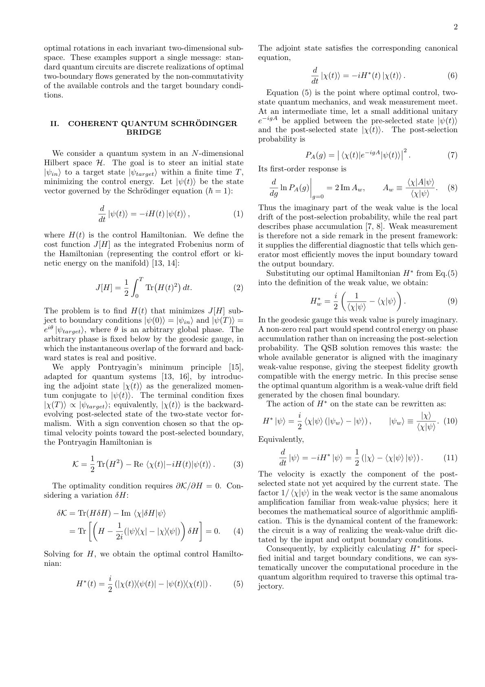
<figcaption class="paper-figure-caption"><b>Fig 1.</b> Low-resolution page preview, page 2</figcaption>
</figure>
<figure class="paper-figure-card">
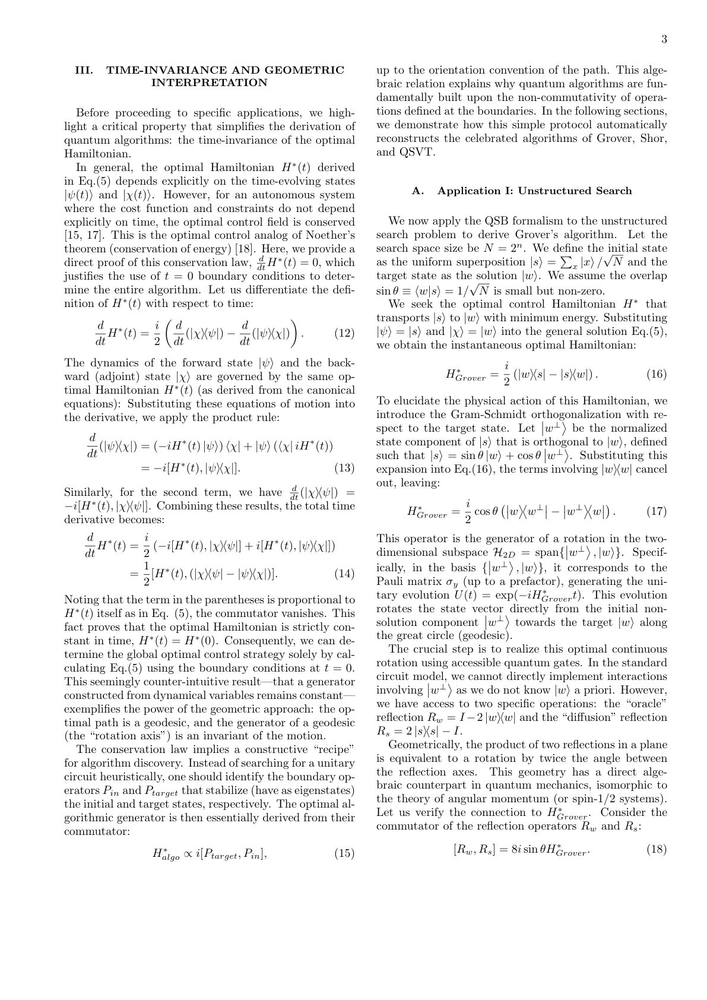
<figcaption class="paper-figure-caption"><b>Fig 2.</b> Low-resolution page preview, page 3</figcaption>
</figure>
<figure class="paper-figure-card">
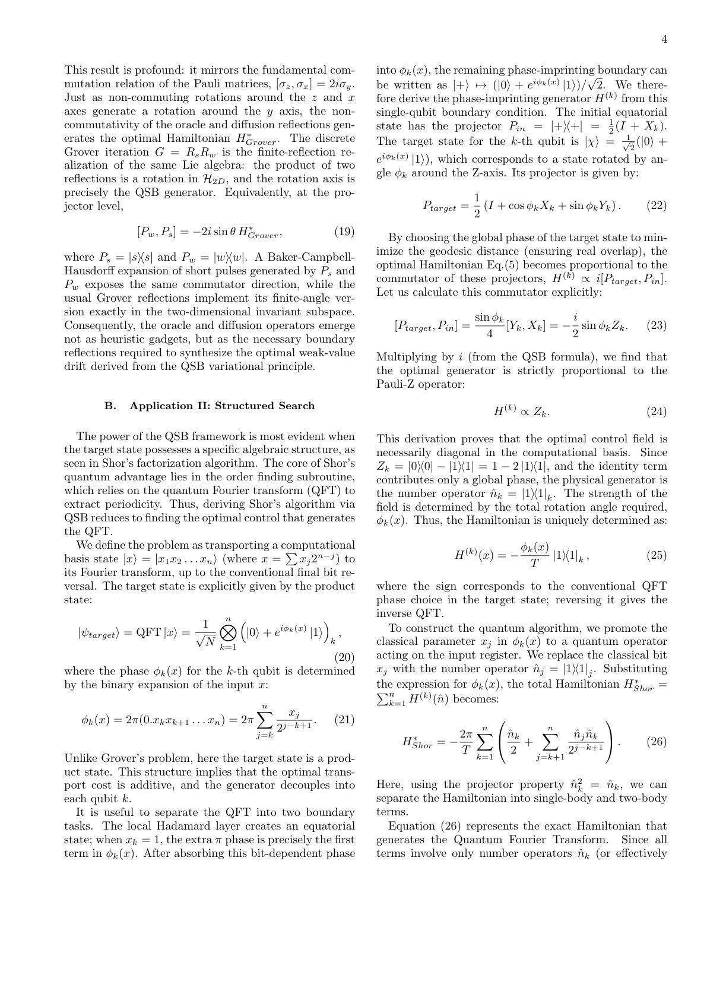
<figcaption class="paper-figure-caption"><b>Fig 3.</b> Low-resolution page preview, page 4</figcaption>
</figure>
<figure class="paper-figure-card">
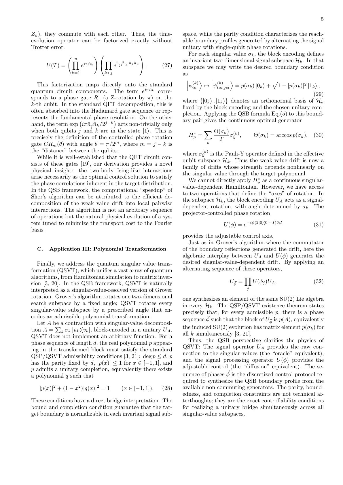
<figcaption class="paper-figure-caption"><b>Fig 4.</b> Low-resolution page preview, page 5</figcaption>
</figure>
<figure class="paper-figure-card">
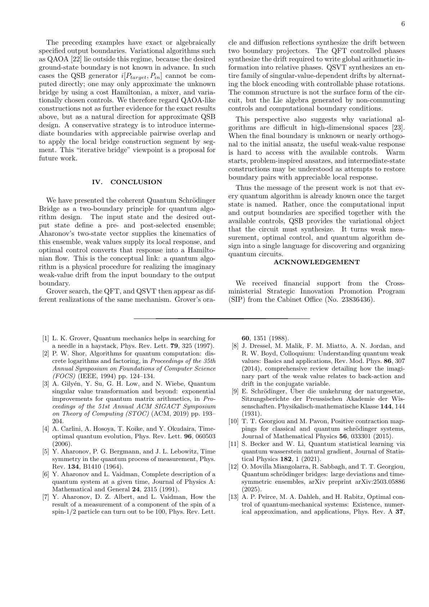
<figcaption class="paper-figure-caption"><b>Fig 5.</b> Low-resolution page preview, page 6</figcaption>
</figure>
</div>

<p><strong>Summary.</strong> This work unifies quantum algorithm design by framing it as solving a Quantum Schrödinger Bridge problem. By minimizing control energy between input and output states, the optimal Hamiltonian is determined solely by the boundary conditions. This geometric perspective successfully derives known algorithms like Grover's search and QFT from a single underlying principle: the commutator of projection operators.</p>
<p><strong>Why it may be interesting.</strong> It provides a powerful unifying mathematical lens—optimal control theory—to view disparate quantum computational tasks, linking them all through the geometry of state evolution and weak measurements.</p>
<details>
<summary>Detailed structure</summary>
<p><strong>Main problem.</strong> The paper reformulates quantum algorithm design as finding an optimal, energy-minimizing flow between a defined input state and a target output state.</p>
<p><strong>Main result.</strong> It shows that standard algorithms like Grover's search and QFT can be derived from a single geometric principle: the commutator of boundary projection operators, $H^*_{	ext{algo}} \propto i[P_{	ext{target}}, P_{	ext{in}}]$.</p>
<p><strong>Method.</strong> The core method is applying the Quantum Schrödinger Bridge (QSB) formalism and Pontryagin's minimum principle to find the optimal control Hamiltonian that minimizes energy dissipation.</p>
<p><strong>Model / system.</strong> The model is a quantum system evolving in an N-dimensional Hilbert space, governed by a time-dependent Hamiltonian $H(t)$, constrained between two fixed boundary states $|\psi_{	ext{in}}
angle$ and $|\psi_{	ext{target}}
angle$.</p>
<p><strong>Key observables.</strong> The optimal Hamiltonian $H^*(t)$, which is shown to be constant in time ($H^*$), and the weak value, identified as the local response function quantifying state drift.</p>
<p><strong>Important parameters / regimes.</strong> The computational boundary conditions (input/output states) define the entire algorithm; the control energy cost functional $J[H]$ dictates the optimal path.</p>
<p><strong>Assumptions / limitations.</strong> The analysis focuses on the coherent pure-state limit, assuming the optimal path is a geodesic determined by minimizing control energy.</p>
<p><strong>Paper structure.</strong> The paper establishes the QSB framework, derives the general form of the optimal Hamiltonian from boundary projectors, and then applies this universal principle to reconstruct specific algorithms (Grover's, QFT, QSVT) as manifestations of this geometric flow.</p>
</details>
<details>
<summary>Abstract</summary>
<p>Quantum algorithms are intrinsically two-boundary processes: an input state is prepared, and an output state or subspace is selected as the computational answer. We formulate this observation as a coherent Quantum Schrödinger Bridge (QSB), a pure-state Hamiltonian counterpart of Schrödinger bridge theory in which the endpoint constraint is imposed on state vectors and the transport cost is the quadratic control action. In this setting Aharonov's two-state vector becomes the natural optimal-control pair: a forward state from the input and a backward state from the target. Pontryagin's principle then yields a universal optimal Hamiltonian whose weak value is purely imaginary in the geodesic gauge. Thus weak values are not an auxiliary interpretation; they are the local response functions that quantify the drift of the pre-selected state toward the post-selected boundary. Applying this framework to unstructured search, periodicity finding, and matrix arithmetic, we reconstruct Grover's algorithm, the quantum Fourier transform underlying Shor's algorithm, and quantum singular value transformation (QSVT). The usual circuit components -- oracles, diffusion reflections, controlled phases, and signal-processing rotations -- emerge as Lie-algebraic syntheses of the optimal weak-value drift. This perspective unifies distinct algorithmic paradigms into a single geometric principle: algorithm design is the problem of choosing computational boundary conditions and realizing the corresponding optimal flow.</p>
</details>
<p><sub><a href="#top">↑ back to top</a></sub></p>

<p><a id="paper-2607.10632"></a></p>
<h3 id="semiclassical-asymptotics-of-multiphotonic-scattering-probabilities-with-partial-indistinguishability"><a href="http://arxiv.org/abs/2607.10632v1">Semiclassical asymptotics of multiphotonic scattering probabilities with partial indistinguishability</a></h3>
<p><strong>Authors:</strong> Alonso Botero, Hubert de Guise, Orlando Melo-Vargas<br>
<strong>Type:</strong> theory · <strong>Category:</strong> other · <strong>PDF:</strong> <a href="https://arxiv.org/pdf/2607.10632v1">https://arxiv.org/pdf/2607.10632v1</a><br>
<strong>Analysis basis:</strong> full PDF text, analyzed in chunks
<strong>Topic relevance:</strong> <code>interference shaping light</code> <strong>3/5</strong> · <code>Keldysh / 2PI / non-Gaussian methods</code> <strong>1/5</strong> · <code>Tavis-Cummings &amp; cavity-many-emitter</code> <strong>1/5</strong> · <code>analog quantum simulation</code> <strong>1/5</strong> · <code>correlated cavity matter</code> <strong>1/5</strong> · <code>driven-dissipative phase transition</code> <strong>1/5</strong> · <code>methods for driven-dissipative</code> <strong>1/5</strong></p>
<div class="figure-strip-hint">↔ Scroll figures horizontally</div>
<div class="paper-figures-scroll">
<figure class="paper-figure-card">
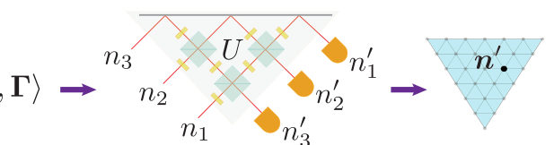
<figcaption class="paper-figure-caption"><b>Fig 1.</b> Figure 1: Schematic of our setup for multiport, multiphoton interferometry, illustrated with M = 3 ports. N photons are prepared in a correlated mode state |n, Γ⟩, where the initial occupations n = (n1, . . . , nM) describes the number of photons entering each port, and the matrix Γ the relevant parameters of the internal modes. The interferometer (shaded region) is described by a unitary U. At the output, photodetectors count the number of exiting photons at each port (without resolving internal modes), and the counts n′ i determine the final occupations n′, which can be viewed as points on a (final) occupation simplex (see Fig. 2). The multiphotonic scattering probability P(n′|U, n, Γ)...</figcaption>
</figure>
<figure class="paper-figure-card">
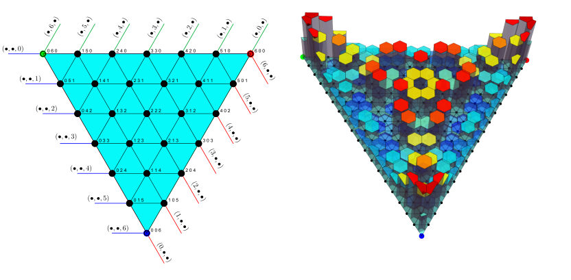
<figcaption class="paper-figure-caption"><b>Fig 2.</b> Figure 2: Left: Occupation simplex for a three-port setting with N = 6 photons. Points denote possible occupation distributions n = (n1, n2, n3) for a given N. Points at the vertices of the simplex (colored) correspond to single-mode occupations. Right: Example of a multiphotonic scattering probability P(n′|U, n, Γ) for N = 18 indistinguishable photons (Γij = 1) and a three-port “tritter” interferometer (Ujk = ei 2π</figcaption>
</figure>
<figure class="paper-figure-card">
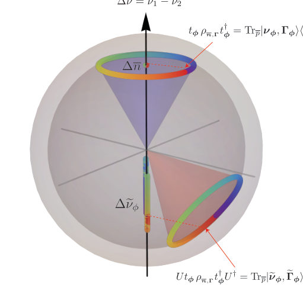
<figcaption class="paper-figure-caption"><b>Fig 3.</b> Figure 3: Graphical illustration of the scattering of virtual states for the case M = 2, in terms of marginal virtual states represented as points in the interior of the Bloch sphere. The circles in the two cones represent the marginal states for the virtual states |νϕ, Γϕ⟩and |eνϕ, eΓϕ⟩in the toroidal expansions of |n, Γ⟩and D(N)(U ⊗1)|n, Γ⟩respectively. The z axis plays the role of the 1-simplex with projections onto the z axis representing the difference ∆ν = ν1−ν2 in the virtual weights of the virtual state. All initial states project to the same point ∆n = n1 −n2 on the z axis. The scattered states project onto different points ∆eν = eν1 −eν2, depending on the values of ϕ. The density...</figcaption>
</figure>
<figure class="paper-figure-card">
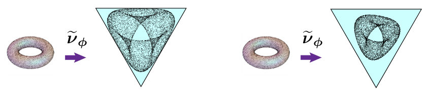
<figcaption class="paper-figure-caption"><b>Fig 4.</b> Figure 4: The classical map (36) for a three-port tritter with n = (0.7, 0.25, 0.05), for two degrees of indistinguishability: perfect indistinguishability (left) and partial indistinguishability (right), according to the indicated distinguishability matrices. The map is represented by the image on the simplex of a random collection of points on the torus. The image of the torus is the classically allowed region R, which may entirely surround voids (points with no preimage on the torus). As the off-diagonal entries of Γ deviate from one, the size and shape of R can change qualitatively. The classical measure describes the density of points on the simplex and diverges at the creases of the...</figcaption>
</figure>
<figure class="paper-figure-card">
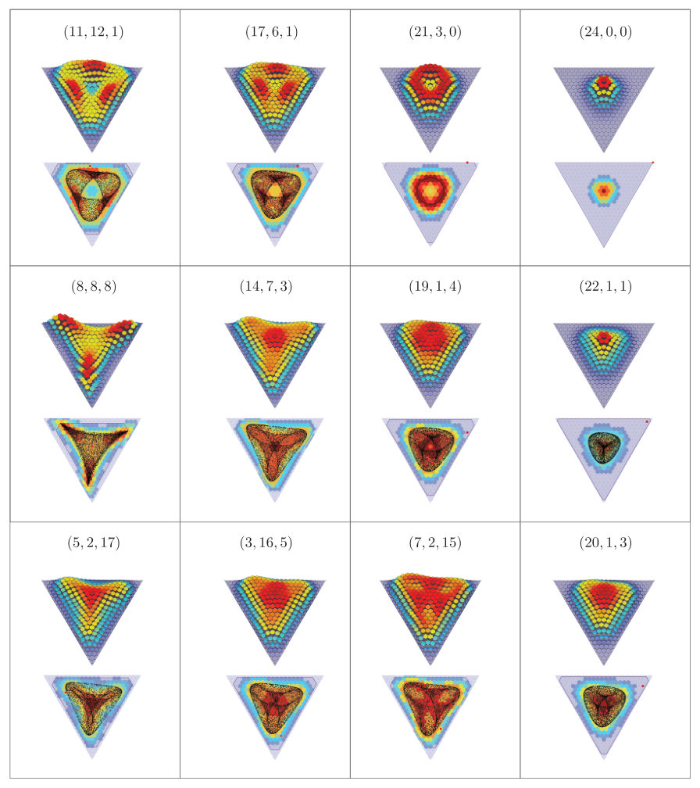
<figcaption class="paper-figure-caption"><b>Fig 5.</b> Figure 5: The MSP P(n′|U, n, Γ) on the normalized occupation simplex for N = 24 partially distinguishable photons scattered by a tritter, for the same distinguishability matrix of (36) and twelve different initial occupations n (box labels and red dots). In each box, the MSP is represented by heights and heat maps; the bottom image compares the MSP with the image under the classical map of uniformly-sampled random torus points. Also shown in the bottom images is the spectral permutahedron (see Section 5)–the convex hull of the permutations of the eigenvalues of ρn,Γ.</figcaption>
</figure>
</div>

<p><strong>Summary.</strong> This theoretical paper develops a framework to calculate the asymptotic behavior of multiphotonic scattering probabilities in interferometers where photons are partially indistinguishable. By mapping the problem onto a classical phase space, the authors predict that the probability distribution will concentrate on a geometrically defined 'classically allowed region.' This provides new insights into quantum interference patterns observable in photon experiments.</p>
<p><strong>Why it may be interesting.</strong> This work provides powerful tools to connect quantum interference phenomena (like photon bunching) directly to classical geometric structures (caustics/voids), offering testable predictions for quantum optics experiments.</p>
<details>
<summary>Detailed structure</summary>
<p><strong>Main problem.</strong> The paper addresses computing the semiclassical asymptotics of multiphotonic scattering probabilities when photons exhibit partial indistinguishability.</p>
<p><strong>Main result.</strong> A new asymptotic formula is established showing that these probabilities concentrate on a 'classically allowed region' defined by a classical map derived from the system's phase space.</p>
<p><strong>Method.</strong> The authors employ a toroidal expansion of multiphotonic states in tensor powers, leading to an integral representation whose large-photon limit is governed by a classical map.</p>
<p><strong>Model / system.</strong> The physical system is a lossless multiport interferometer analyzed using correlated mode states $|\mathbf{n}, \Gamma
angle$. The model incorporates both port degrees of freedom and internal overlaps characterized by the Gram matrix $\Gamma$.</p>
<p><strong>Key observables.</strong> Multiphotonic scattering probability $P(\mathbf{n}'|\mathcal{U}, \mathbf{n}, \Gamma)$, which is analyzed on the output occupation simplex.</p>
<p><strong>Important parameters / regimes.</strong> The degree of indistinguishability, controlled by the Gram matrix $\Gamma$; the large-photon limit ($N 	o \infty$).</p>
<p><strong>Assumptions / limitations.</strong> The analysis relies on the toroidal expansion and asymptotic approximations in the large-photon limit; specific mathematical identities are used to simplify determinants.</p>
<p><strong>Figures summary.</strong> Figures illustrate the setup, the occupation simplex, and crucially, visualize predicted structures like caustics (ridges of enhanced probability) and voids (regions of suppressed probability) arising from the classical map.</p>
<p><strong>Paper structure.</strong> The paper moves from defining exact Fock-space expressions for scattering probabilities to developing a mathematically tractable framework using tensor power expansions. This leads to an integral representation, which is then analyzed asymptotically via complex phase variables and determinant calculations.</p>
</details>
<details>
<summary>Abstract</summary>
<p>We propose a framework for computing multiphotonic scattering probabilities in a lossless multiport interferometer for arbitrary photon numbers and degrees of indistinguishability. By exploiting a toroidal expansion of multiphotonic states in tensor powers of single-particle states, the framework defines a map from a torus of relative phases to the probability simplex that governs the asymptotic behavior of scattering probabilities in the large-photon limit. Specifically, the probabilities concentrate on the "classically allowed region" defined by the map, and the slowly-varying part of the multiphotonic distribution reproduces a classical measure induced by the map. As a result, we are able to establish a new asymptotic formula for the multiphotonic probabilities in a general scenario of partially indistinguishable photons, while also providing a single-particle picture to explain the asymptotics of known multiphotonic transition amplitudes in the fully indistinguishable case. More broadly, our framework yields new, directly testable consequences in relation to asymptotic photon bunching patterns: it translates features of the classical map -- such as caustics and voids -- into direct predictions about regions of large or exponentially suppressed photon-distribution probability.</p>
</details>
<p><sub><a href="#top">↑ back to top</a></sub></p>

<p><a id="paper-2607.11759"></a></p>
<h3 id="higher-order-covariance-matrices-for-non-gaussian-quantum-states"><a href="http://arxiv.org/abs/2607.11759v1">Higher-order covariance matrices for non-Gaussian quantum states</a></h3>
<p><strong>Authors:</strong> Vojtěch Kala, Petr Marek, Nicolas J. Cerf<br>
<strong>Type:</strong> theory · <strong>Category:</strong> quantum information and computing · <strong>PDF:</strong> <a href="https://arxiv.org/pdf/2607.11759v1">https://arxiv.org/pdf/2607.11759v1</a><br>
<strong>Analysis basis:</strong> full PDF text, analyzed in chunks
<strong>Topic relevance:</strong> <code>Keldysh / 2PI / non-Gaussian methods</code> <strong>3/5</strong> · <code>quantum measurements</code> <strong>2/5</strong> · <code>entanglement &amp; information structure</code> <strong>1/5</strong> · <code>measurement-induced transitions</code> <strong>1/5</strong> · <code>methods for driven-dissipative</code> <strong>1/5</strong></p>
<div class="figure-strip-hint">↔ Scroll figures horizontally</div>
<div class="paper-figures-scroll">
<figure class="paper-figure-card">
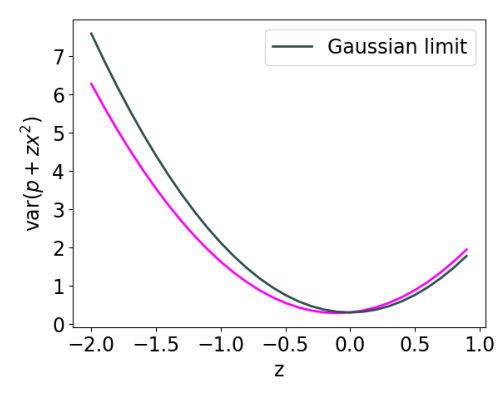
<figcaption class="paper-figure-caption"><b>Fig 1.</b> FIG. 1. Variance of the operator p+zx2 (magenta) as a func- tion of z, computed with the higher-order covariance matrix and as its Gaussian limit.</figcaption>
</figure>
</div>

<p><strong>Summary.</strong> The paper introduces higher-order covariance matrices to overcome the limitations of standard second-order moment descriptions when dealing with non-Gaussian quantum states. This formalism allows researchers to track state properties under complex transformations like nonlinear squeezing using only limited homodyne measurements. It provides a scalable and practical theoretical framework for continuous-variable quantum information science.</p>
<p><strong>Why it may be interesting.</strong> This work provides a necessary mathematical toolset for analyzing complex quantum states beyond the Gaussian regime, which is crucial for understanding resource theories in continuous-variable quantum information processing.</p>
<details>
<summary>Detailed structure</summary>
<p><strong>Main problem.</strong> The standard symplectic framework using covariance matrices is insufficient for analyzing non-Gaussian quantum states because it only captures second-order moments, neglecting essential higher-order correlations.</p>
<p><strong>Main result.</strong> Higher-order covariance matrices provide a simple, scalable formalism to characterize and track the evolution of non-Gaussian states under Gaussian transformations. This method avoids the exponential scaling associated with full Fock basis simulations.</p>
<p><strong>Method.</strong> The authors define and utilize higher-order covariance matrices built from quadrature monomials, allowing for the evaluation of state properties using limited homodyne measurement data rather than full quantum simulation.</p>
<p><strong>Model / system.</strong> The work focuses on continuous-variable quantum systems, particularly characterizing non-Gaussian states relevant to quantum optics and cluster state descriptions. The formalism is tested against Gaussian operations like squeezing and beam splitting.</p>
<p><strong>Key observables.</strong> Higher-order moments of quadrature operators (e.g., $  ext{var}(p + zx^2)$), the higher-order mean vector ($\langle \mathbf{r} 
angle$), and the higher-order covariance matrix ($\gamma$).</p>
<p><strong>Important parameters / regimes.</strong> The dimension of the matrices scales polynomially with the number of modes ($n$) rather than exponentially, which is a key advantage.</p>
<p><strong>Assumptions / limitations.</strong> Gaussian operations are treated as 'free' transformations. The formalism requires careful handling of physicality conditions for $\gamma$ and relies on measurement data from specific quadrature angles.</p>
<p><strong>Figures summary.</strong> One figure compares the actual variance to its Gaussian limit, showing significant divergence for non-Gaussian states as a parameter $|z|$ increases.</p>
<p><strong>Paper structure.</strong> The paper establishes the limitations of second-order moments, introduces the higher-order covariance matrix formalism ($\gamma$), details how $\gamma$ transforms under general Gaussian operations (rotations, squeezing), and finally shows how to estimate these matrices from practical homodyne measurement data.</p>
</details>
<details>
<summary>Abstract</summary>
<p>Covariance matrices lie at the heart of the powerful and well-established symplectic framework for describing continuous-variable Gaussian quantum states. However, since this framework only relies on first- and second-order moments, it is not sufficient for the analysis of non-Gaussian states because their higher-order moments are essential to capture some of their key properties. Here, we define higher-order covariance matrices -- more precisely, covariance matrices built from higher-order quadrature monomials -- which provide a simple way to evaluate the effect of Gaussian transformations on non-Gaussian states and can be used, for example, to address nonlinear squeezing or non-Gaussian nullifiers. Higher-order covariance matrices can be estimated from homodyne measurement data using only a limited number of quadrature angles, which involves matrices of moderate dimension compared with a full simulation in the Fock basis. The dimension of a higher-order covariance matrix does not depend on the span of the quantum states in Fock basis and, furthermore, scales only polynomially with the number of modes.</p>
</details>
<p><sub><a href="#top">↑ back to top</a></sub></p>

<p><a id="paper-2607.10770"></a></p>
<h3 id="learning-as-a-geometric-phase-transition-renormalization-group-flow-and-anisotropic-symmetry-breaking-in-deep-networks"><a href="http://arxiv.org/abs/2607.10770v1">Learning as a Geometric Phase Transition: Renormalization Group Flow and Anisotropic Symmetry Breaking in Deep Networks</a></h3>
<p><strong>Authors:</strong> G. Le Pera, C. Nordio<br>
<strong>Type:</strong> theory · <strong>Category:</strong> disordered systems and neural networks · <strong>PDF:</strong> <a href="https://arxiv.org/pdf/2607.10770v1">https://arxiv.org/pdf/2607.10770v1</a><br>
<strong>Analysis basis:</strong> full PDF text, analyzed in chunks
<strong>Topic relevance:</strong> <code>Keldysh / 2PI / non-Gaussian methods</code> <strong>3/5</strong> · <code>non-equilibrium universality</code> <strong>2/5</strong> · <code>driven-dissipative phase transition</code> <strong>1/5</strong> · <code>methods for driven-dissipative</code> <strong>1/5</strong> · <code>non-equilibrium dynamics</code> <strong>1/5</strong></p>
<div class="figure-strip-hint">↔ Scroll figures horizontally</div>
<div class="paper-figures-scroll">
<figure class="paper-figure-card">
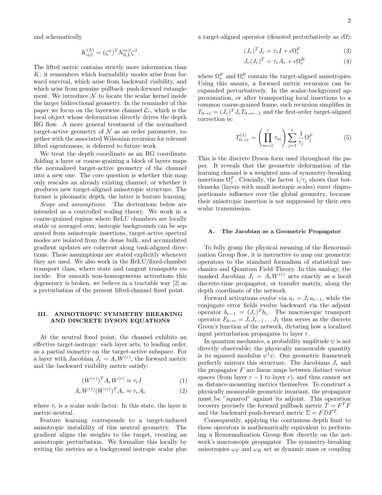
<figcaption class="paper-figure-caption"><b>Fig 1.</b> Low-resolution page preview, page 2</figcaption>
</figure>
<figure class="paper-figure-card">
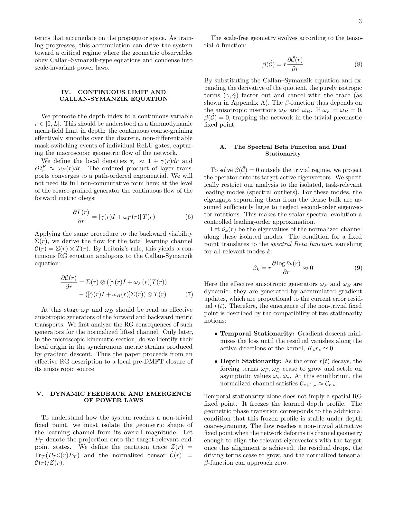
<figcaption class="paper-figure-caption"><b>Fig 2.</b> Low-resolution page preview, page 3</figcaption>
</figure>
<figure class="paper-figure-card">
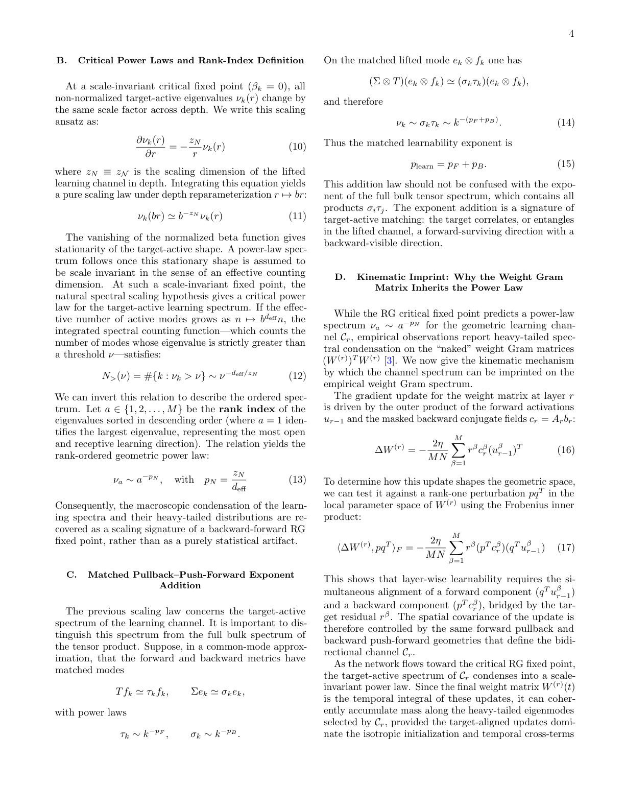
<figcaption class="paper-figure-caption"><b>Fig 3.</b> Low-resolution page preview, page 4</figcaption>
</figure>
<figure class="paper-figure-card">
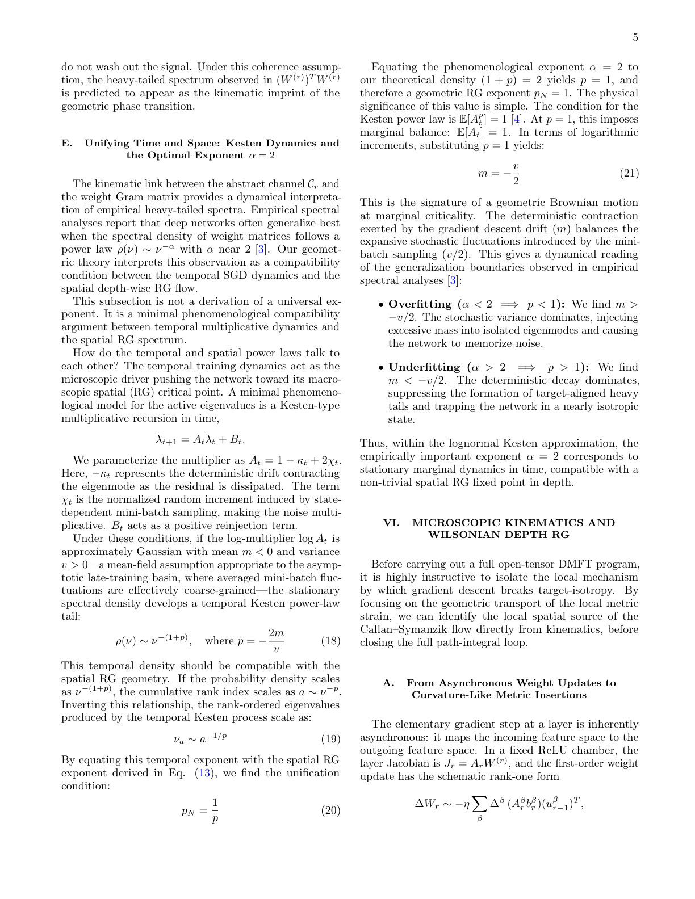
<figcaption class="paper-figure-caption"><b>Fig 4.</b> Low-resolution page preview, page 5</figcaption>
</figure>
<figure class="paper-figure-card">
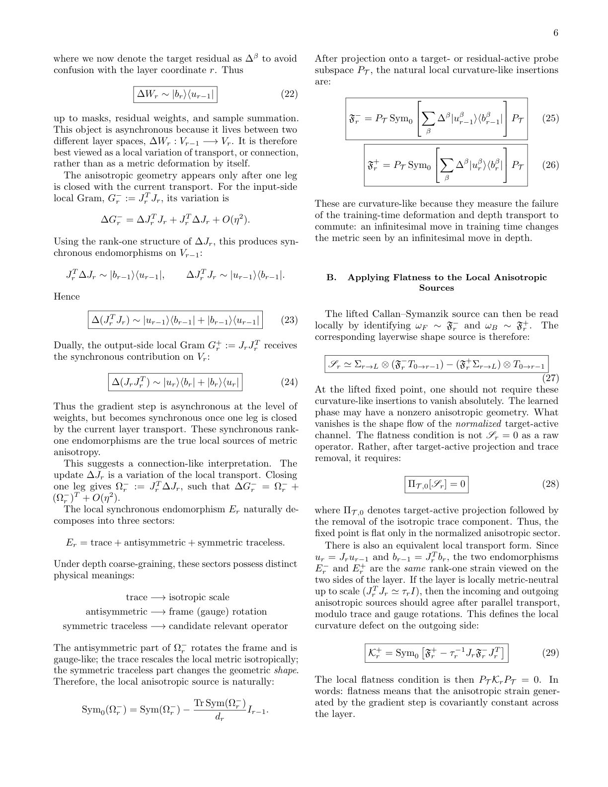
<figcaption class="paper-figure-caption"><b>Fig 5.</b> Low-resolution page preview, page 6</figcaption>
</figure>
</div>

<p><strong>Summary.</strong> This paper treats feature learning in deep neural networks as a geometric critical phenomenon analyzed through Renormalization Group flow. By deriving RG equations for the network's metric tensor, the authors show that stable, non-trivial learning requires an instability away from an isotropic fixed point. The resulting framework predicts how anisotropic structures emerge and govern the system's asymptotic behavior.</p>
<p><strong>Why it may be interesting.</strong> It provides a rigorous theoretical framework linking concepts from critical phenomena (RG flow, phase transitions) to the dynamics of deep learning optimization, offering insights into the emergent structure of learned representations.</p>
<details>
<summary>Detailed structure</summary>
<p><strong>Main problem.</strong> The paper formulates feature learning in deep neural networks as a geometric critical phenomenon governed by Renormalization Group (RG) flow.</p>
<p><strong>Main result.</strong> Learning corresponds to an instability of the target-isotropic fixed point, leading to stable anisotropic structures characterized by non-zero symmetry-breaking operators that govern the RG flow.</p>
<p><strong>Method.</strong> The authors employ RG techniques, deriving tensorial and spectral beta functions from microscopic kinematic analyses of gradient updates. They use Dyson expansions and Callan-Symanzik flow equations to track geometric changes across network depth.</p>
<p><strong>Model / system.</strong> The system is a deep feed-forward ReLU neural network trained via gradient descent. The analysis focuses on the 'lifted tensor-product learning metric' which quantifies the entanglement between forward pullback survival and backward push-forward visibility.</p>
<p><strong>Key observables.</strong> Lifted tensor-product learning metric ($\mathbf{N}$), target-active geometry, anisotropic insertions ($\Omega^F, \Omega^B$), spectral eigenvalues ($\hat{
u}_k$), and the associated $eta$-functions.</p>
<p><strong>Important parameters / regimes.</strong> Network depth ($L$ or $r$), RG flow scale (coarse-graining step), and exponents derived from power-law spectra ($p_N, p_F, p_B$).</p>
<p><strong>Assumptions / limitations.</strong> The analysis relies on several controlled scaling theory assumptions, including the local stability of ReLU chambers and the ability to project dynamics onto target-relevant eigenmodes.</p>
<p><strong>Figures summary.</strong> Not specified in notes; the structure suggests derivations leading to flow equations and final fixed-point conditions.</p>
<p><strong>Paper structure.</strong> The paper progresses from defining the geometric metric, deriving RG flow equations via Dyson expansions for anisotropic insertions, identifying the local kinematic sources of anisotropy (strains), and finally solving for the non-trivial stable fixed point governing feature learning.</p>
</details>
<details>
<summary>Abstract</summary>
<p>We formulate feature learning as a geometric critical phenomenon of the lifted tensor-product learning metric. The central object is not a scalar overlap, but the target-active geometry of \[ \mathcal N_{0,L}=\frac1N\sum_{r=1}^{L}Σ_{r\to L}\otimes T_{0\to r-1}, \] which entangles forward pullback survival with backward push-forward visibility. The neutral phase is target-isotropic: after restriction to endpoint target-active states and trace normalization, the lifted metric is proportional to the identity. Learning corresponds to an instability of this target-isotropic fixed point and to the emergence of traceless target-aligned eigentensors. We derive discrete Dyson expansions for local anisotropic insertions and their continuous Callan--Symanzik flow. Crucially, before constructing the full temporal mean-field theory, we identify the local spatial source of the $β$-functions directly from microscopic kinematics: asynchronous gradient updates generate synchronous metric strains, whose target-active symmetric traceless components act as curvature-like defects. The Wilsonian depth RG flow is then governed by the transport, balance, and coarse-grained irrelevance of these defects. Heavy-tailed spectra arise, under a scale-free counting hypothesis, as the spectrum of the target-active lifted geometry, with exponent addition in the matched pullback--push-forward sector. Finally, we relate this depth RG picture to temporal stochastic training dynamics and to the kinematic imprint of the learned channel on empirical weight Gram matrices.</p>
</details>
<p><sub><a href="#top">↑ back to top</a></sub></p>

<p><a id="paper-2607.10857"></a></p>
<h3 id="catalog-of-altermagnetism-in-magnetic-wallpaperspace-groups-and-nonsymmorphic-altermagnets"><a href="http://arxiv.org/abs/2607.10857v1">Catalog of Altermagnetism in Magnetic Wallpaper/Space Groups and Nonsymmorphic Altermagnets</a></h3>
<p><strong>Authors:</strong> Congcong Le, Fan Cui, Iao-Fai Io, Moritz Hirschmann, Xianxin Wu, Ching-Kai Chiu<br>
<strong>Type:</strong> theory · <strong>Category:</strong> other · <strong>PDF:</strong> <a href="https://arxiv.org/pdf/2607.10857v1">https://arxiv.org/pdf/2607.10857v1</a><br>
<strong>Analysis basis:</strong> full PDF text, analyzed in chunks
<strong>Topic relevance:</strong> <code>exotic spin models in light-matter</code> <strong>3/5</strong> · <code>spintronics-quantum-optics interface</code> <strong>3/5</strong> · <code>analog quantum simulation</code> <strong>1/5</strong></p>
<div class="figure-strip-hint">↔ Scroll figures horizontally</div>
<div class="paper-figures-scroll">
<figure class="paper-figure-card">
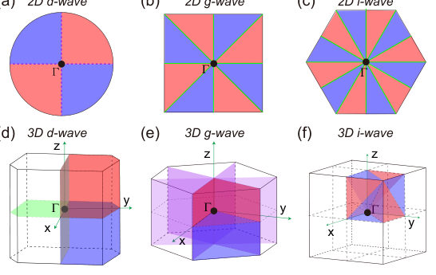
<figcaption class="paper-figure-caption"><b>Fig 1.</b> Figure 1: (color online) Classification of 2D and 3D altermagnetic systems, with and without inversion symmetry, into three fundamental types: d-wave, g-wave and i-wave. The red and blue regions represent the spin-up and spin-down distri- butions in BZs, and the conventional-cell BZs are used. (a) A circular representation is adopted for 2D d-wave, indicating that its BZ does not have a fixed shape. It can appear in the BZs of 2D and 3D orthorhombic and square lattices. (b) 2D g-wave is confined to square lattices in 2D and 3D systems. (c) 2D i-wave appears only in trigonal and hexagonal lattices in 2D and 3D systems. (d) 3D d-wave is only in monoclinic lattice. (e) 3D g-wave is restricted...</figcaption>
</figure>
<figure class="paper-figure-card">
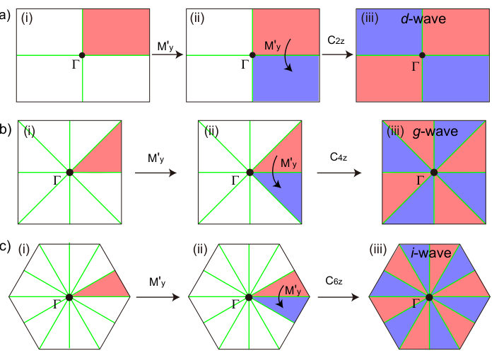
<figcaption class="paper-figure-caption"><b>Fig 2.</b> Figure 2: (color online) Stepwise construction of spin-momentum textures in the Brillouin zone for representative AWGs: (a) P2m′m′, (b) P4m′m′, and (c) P6m′m′. Red and blue regions denote spin-up and spin-down polarization, respectively. The panels illustrate the generation process: (i) The initial spin-polarized irreducible BZ (red). (ii) The texture gener- ated by applying the spin-flipping mirror generator M′ y (mapping red to blue). (iii) The complete spin-splitting pattern obtained by applying the rotation generator Cnz. Green lines indicate spin-degenerate nodal lines protected by mirror symmetries.</figcaption>
</figure>
<figure class="paper-figure-card">
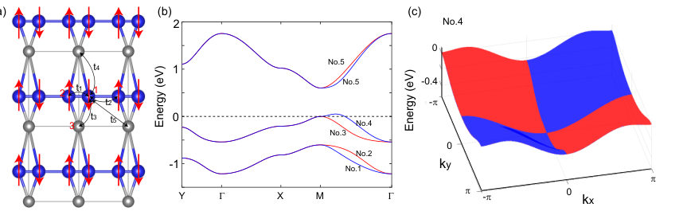
<figcaption class="paper-figure-caption"><b>Fig 3.</b> Figure 3: (color online) Crystal lattice and band structure for AWG P1m′1. (a) Two-dimensional altermagnetic crystal lattice, where No.1 and 2 carry spin-down and spin-up moments, and No.3 is nonmagnetic atom. (b) Band structure along high symmetry lines. Red and blue lines are spin up and down bands. (c) Three-dimensional energy dispersion of the 4th band over the Brillouin zone.</figcaption>
</figure>
<figure class="paper-figure-card">
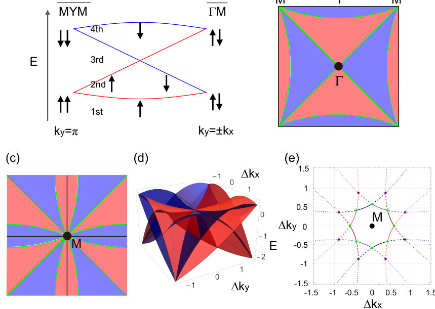
<figcaption class="paper-figure-caption"><b>Fig 4.</b> Figure 4: (color online) Nonsymmorphic altermagnetism in the magnetic wallpaper group P4′gm′. (a) Schematic of the hourglass dispersion along a path connecting the BZ boundary (ky = π) to the diagonal symmetry lines (kx = ±ky). A symmetry-protected crossing (nodal line) occurs between the 2nd and 3rd bands with opposite-spin polarizations. (b) Spin distribution of the 2nd occupied band over the BZ, while the 3rd band exhibits the opposite-spin distribution (not shown). (c) Detailed spin texture of the 2nd band near the M point, revealing 12 nodal lines (green) where the spin char- acter inverts as the path encircles M. (d) Three-dimensional energy dispersion of the effective four-band...</figcaption>
</figure>
<figure class="paper-figure-card">
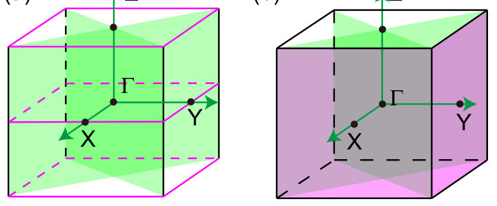
<figcaption class="paper-figure-caption"><b>Fig 5.</b> Figure 5: (color online) Nonsymmorphic altermagnetism in the altermagnetic space groups P4′bm′ and P4′ 2212′. (a) and (b) BZs of altermagnetic space groups P4′bm′ and P4′ 2212′: Magenta lines and planes indicate same- spin twofold degeneracies, while the green planes represent opposite-spin twofold degeneracies.</figcaption>
</figure>
</div>

<p><strong>Summary.</strong> This work provides a comprehensive catalog of altermagnetism across all 2D and 3D magnetic crystal groups by incorporating non-spatial symmetries. It reveals that nonsymmorphic operations are crucial for predicting new types of spin-splitting band structures, extending the known understanding of this quantum magnetic phase.</p>
<p><strong>Why it may be interesting.</strong> While focused on solid-state magnetism, the rigorous application of global symmetries (like time-reversal symmetry) to classify electronic states in momentum space is highly relevant to topological materials research, which often overlaps with AMO physics concepts like band topology and protected degeneracies.</p>
<details>
<summary>Detailed structure</summary>
<p><strong>Main problem.</strong> To systematically extend the classification of altermagnetism beyond conventional centrosymmetric treatments by incorporating non-spatial global symmetries and nonsymmorphic crystal symmetries.</p>
<p><strong>Main result.</strong> The authors provide a complete catalog of 422 altermagnetic space groups, demonstrating that nonsymmorphic symmetries are essential for realizing novel spin-splitting band structures beyond the conventionally established wave types.</p>
<p><strong>Method.</strong> The study employs systematic symmetry analysis based on magnetic wallpaper and space groups, utilizing an effective spinless time-reversal symmetry to classify allowed magnetic orders.</p>
<p><strong>Model / system.</strong> The focus is on altermagnetism in crystalline materials, characterized by compensated collinear spin alignment and momentum-dependent spin splitting in the Brillouin zone (BZ) despite zero net magnetization. The analysis uses group theory applied to crystal symmetries.</p>
<p><strong>Key observables.</strong> Altermagnetic order cataloging (17 wallpaper groups, 422 space groups), distinct spin distribution patterns in the BZ (e.g., d-, g-, i-wave types), and symmetry-enforced hourglass dispersions.</p>
<p><strong>Important parameters / regimes.</strong> The classification depends critically on the presence of non-spatial global symmetries ($S$) and nonsymmorphic operations ($    ilde{g}$).</p>
<p><strong>Assumptions / limitations.</strong> The analysis initially focuses on collinear spin configurations and neglects Spin-Orbit Coupling (SOC) for defining the symmetry class, although extensions are discussed.</p>
<p><strong>Figures summary.</strong> Figures illustrate the classification of 2D/3D altermagnetic systems into wave types and show specific examples like Y2Cu2O5 exhibiting fourfold degeneracy in its spin-splitting BZ due to combined degeneracies.</p>
<p><strong>Paper structure.</strong> The paper first defines conventional altermagnetism, then extends the symmetry framework using non-spatial symmetries ($S$). It systematically catalogs all possible groups, detailing how nonsymmorphic operations lead to new band structures and novel wave types beyond the initial six established categories.</p>
</details>
<details>
<summary>Abstract</summary>
<p>Conventional altermagnetism, characterized by compensated collinear spin alignment and spin splitting, exhibits identical spin states at opposite momenta. In this work, we employ a non-spatial global symmetry $S$, the spinless time-reversal symmetry, which effectively replaces inversion symmetry in preserving the spin-state equivalence; hence, we systematically extend the classification of altermagnetism to all possible non-centrosymmetric crystals. By analyzing the necessary symmetry conditions, we provide a complete catalog of altermagnetic orders for all 2D magnetic wallpaper groups and all 3D magnetic space groups, identifying 17 altermagnetic wallpaper groups (12 centrosymmetric and 5 non-centrosymmetric) and 422 altermagnetic space groups (160 centrosymmetric and 262 non-centrosymmetric). This catalog assigns each altermagnetic wallpaper and space group to one of the six altermagnetic wave types established in the literature and presents its distinct spin distribution in the Brillouin zone (BZ); notably, the low-energy wave-type description does not necessarily extend throughout the full BZ, since the spin-degenerate nodal lines and planes can be unpinned from the high-symmetry planes. Beyond the catalog, nonsymmorphic symmetries further bring new patterns of the altermagnetic BZs through the emergence of hourglass dispersions, which arise from the compatibility relations between two symmetry-protected degenerate manifolds: same-spin and opposite-spin degeneracies. In both the non-centrosymmetric altermagnetism and the emergence of the hourglass dispersion, the spinless time-reversal symmetry plays the key role. Our work extends the symmetry catalog of altermagnetism and reveals that nonsymmorphic symmetries are essential for realizing altermagnetic band structures beyond the six established wave types, such as an $i$-wave-like spin winding in a tetragonal BZ.</p>
</details>
<p><sub><a href="#top">↑ back to top</a></sub></p>

<p><a id="paper-2607.10847"></a></p>
<h3 id="thawed-gaussian-ehrenfest-dynamics"><a href="http://arxiv.org/abs/2607.10847v1">Thawed Gaussian Ehrenfest dynamics</a></h3>
<p><strong>Authors:</strong> Jiří J. L. Vaníček<br>
<strong>Type:</strong> theory · <strong>Category:</strong> other · <strong>PDF:</strong> <a href="https://arxiv.org/pdf/2607.10847v1">https://arxiv.org/pdf/2607.10847v1</a><br>
<strong>Analysis basis:</strong> full PDF text, analyzed in chunks
<strong>Topic relevance:</strong> <code>Keldysh / 2PI / non-Gaussian methods</code> <strong>3/5</strong> · <code>non-equilibrium dynamics</code> <strong>2/5</strong> · <code>driven-dissipative phase transition</code> <strong>1/5</strong> · <code>methods for driven-dissipative</code> <strong>1/5</strong></p>
<div class="figure-strip-hint">↔ Scroll figures horizontally</div>
<div class="paper-figures-scroll">
<figure class="paper-figure-card">
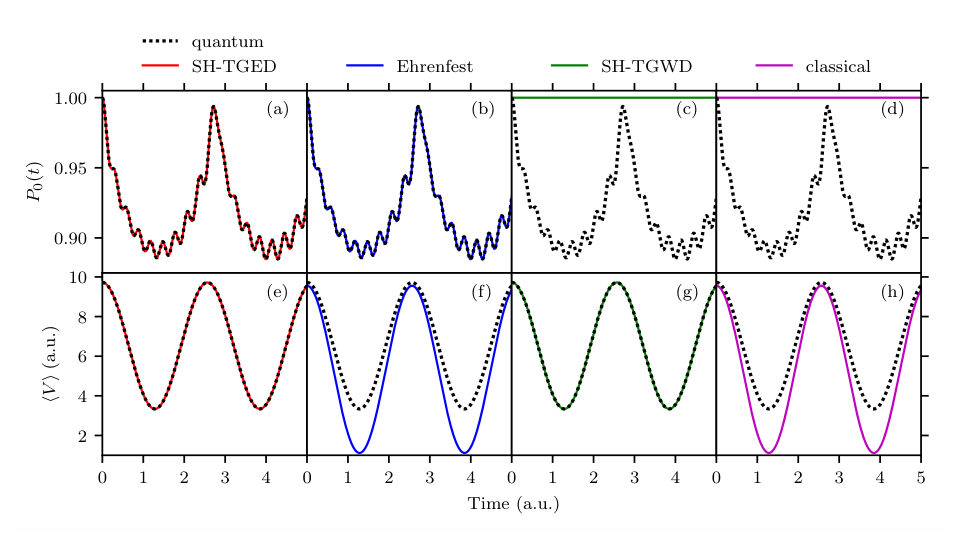
<figcaption class="paper-figure-caption"><b>Fig 1.</b> FIG. 1. Advantage of thawed Gaussian Ehrenfest dynamics (TGED) over Ehrenfest dynamics,</figcaption>
</figure>
<figure class="paper-figure-card">
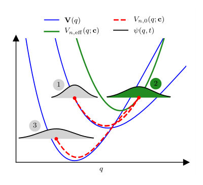
<figcaption class="paper-figure-caption"><b>Fig 2.</b> FIG. 2. Example of a thawed Gaussian Ehrenfest dynamics of the molecular wavepacket Ψ(q, t) =</figcaption>
</figure>
</div>

<p><strong>Summary.</strong> The paper introduces Thawed Gaussian Ehrenfest Dynamics (TGED), a unified semiclassical approach for simulating complex molecular dynamics. It combines the ability of Ehrenfest dynamics to handle electronic nonadiabaticity with the nuclear quantum treatment found in thawed Gaussian wavepacket methods. This framework is highly valuable for accurately modeling chemical processes where both electronic and vibrational quantum effects are crucial.</p>
<p><strong>Why it may be interesting.</strong> This work directly addresses advanced topics in molecular quantum dynamics—specifically nonadiabatic coupling and nuclear quantum effects—using sophisticated variational principles and geometric integration techniques relevant to open quantum systems modeling.</p>
<details>
<summary>Detailed structure</summary>
<p><strong>Main problem.</strong> The central problem is developing a unified, efficient method to simulate molecular quantum dynamics that accurately incorporates both electronic nonadiabatic transitions and full nuclear quantum effects.</p>
<p><strong>Main result.</strong> The proposed Thawed Gaussian Ehrenfest Dynamics (TGED) framework successfully unifies existing methods, showing it reduces correctly to classical Ehrenfest dynamics or purely quantum wavepacket dynamics in appropriate limits.</p>
<p><strong>Method.</strong> It employs a time-dependent variational principle applied to a Hartree product ansatz for the total wavefunction, leading to coupled equations of motion for electronic and Gaussian nuclear parameters.</p>
<p><strong>Model / system.</strong> The system is molecular, governed by a Hamiltonian coupling electronic states (expanded in a diabatic basis) and nuclear coordinates/momenta. The dynamics are treated semiclassically using Gaussian wavepackets for the nuclei.</p>
<p><strong>Key observables.</strong> Nonadiabatic population transfer between electronic states, expectation values of kinetic and potential energy, and the time evolution of Gaussian parameters ($q_t, p_t$, etc.).</p>
<p><strong>Important parameters / regimes.</strong> The method is analyzed in limits such as the classical limit ($\hbar 	o 0$) and the absence of electronic coupling.</p>
<p><strong>Assumptions / limitations.</strong> It remains a mean-field approximation relying on approximating the potential energy matrix by an effective locally quadratic form to maintain Gaussian wavepackets. It fails near conical intersections between states of different symmetry.</p>
<p><strong>Figures summary.</strong> Figure 1 illustrates TGED's advantage over standard Ehrenfest dynamics (lacking NQE) and pure TGWD (lacking nonadiabaticity). Figure 2 likely shows the evolution of the nuclear wavepacket using the proposed method.</p>
<p><strong>Paper structure.</strong> The paper introduces the need for unification, derives the general variational formalism by applying TDVP to a Hartree product ansatz, details the resulting coupled equations involving effective quadratic potentials, and concludes with derivations of structure-preserving geometric integrators and conditions for exactness in various limits.</p>
</details>
<details>
<summary>Abstract</summary>
<p>Ehrenfest dynamics is a widely used mixed quantum--classical approach for nonadiabatic molecular dynamics, whereas thawed Gaussian wavepacket dynamics provides an efficient semiclassical description of adiabatic nuclear quantum dynamics. Here we describe thawed Gaussian Ehrenfest dynamics (TGED), which unifies and generalizes these two methods to capture both electronic nonadiabaticity and nuclear quantum effects within a single framework. The fully variational formulation of TGED is derived by applying the time-dependent variational principle to a Hartree product of electronic and Gaussian nuclear wavepackets. Replacing the effective locally quadratic molecular potential obtained from this variational treatment by alternative effective locally quadratic potentials yields an infinite family of TGED methods, of which we present several members. We analyze the limiting cases of the general formalism and show, in particular, that it reduces to conventional Ehrenfest dynamics in the classical limit for the nuclei and to thawed Gaussian wavepacket dynamics in the absence of electronic coupling. Finally, we present explicit geometric integrators for the entire family of methods and identify the conditions under which the different approximations become exact.</p>
</details>
<p><sub><a href="#top">↑ back to top</a></sub></p>

<p><a id="paper-2607.09976"></a></p>
<h3 id="gpu-accelerated-host-aware-dead-measurement-detection-in-hybrid-quantum-classical-programs-full-version"><a href="http://arxiv.org/abs/2607.09976v1">GPU-Accelerated Host-Aware Dead-Measurement Detection in Hybrid Quantum--Classical Programs: Full Version</a></h3>
<p><strong>Authors:</strong> Yanbin Chen, Qunyou Liu, Yu Wang, Christian B. Mendl, Helmut Seidl<br>
<strong>Type:</strong> theory · <strong>Category:</strong> quantum information and computing · <strong>PDF:</strong> <a href="https://arxiv.org/pdf/2607.09976v1">https://arxiv.org/pdf/2607.09976v1</a><br>
<strong>Analysis basis:</strong> full PDF text, analyzed in chunks
<strong>Topic relevance:</strong> <code>measurement-induced transitions</code> <strong>3/5</strong> · <code>quantum measurements</code> <strong>2/5</strong> · <code>methods for driven-dissipative</code> <strong>1/5</strong></p>
<div class="figure-strip-hint">↔ Scroll figures horizontally</div>
<div class="paper-figures-scroll">
<figure class="paper-figure-card">
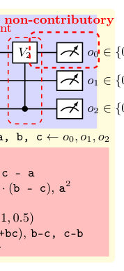
<figcaption class="paper-figure-caption"><b>Fig 1.</b> Fig. 1: A hybrid program where the host variable a, bound to measurement out- come o0, is syntactically used but semantically non-contributory: the program’s return is invariant under changes to o0. By non-contribution of o0, the quantum gates enclosed by red dashed boxes are identified as redundancies: their removal leaves the host program’s returned result unchanged.</figcaption>
</figure>
<figure class="paper-figure-card">
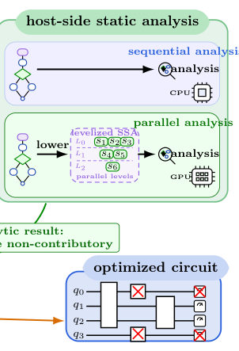
<figcaption class="paper-figure-caption"><b>Fig 2.</b> Fig. 2: Overview of our optimization pass. Given a hybrid quantum program, we analyze the classical host program to determine which measurement outcomes are non-contributory to the final return. These analysis results are then passed to the optimizer, which performs DGE-based pruning on the circuit and removes measurements and gates that affect only non-contributory outcomes. The host- side analysis can be executed either sequentially on a CPU backend or, after lowering to a levelized SSA representation, by a CUDA-based GPU backend.</figcaption>
</figure>
<figure class="paper-figure-card">
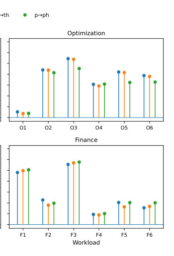
<figcaption class="paper-figure-caption"><b>Fig 3.</b> Fig. 3: Per-workload total-gate reduction for the main effectiveness workloads. For each workload, the figure reports the additional total-gate reduction obtained by composing host-side analysis with Qiskit (q→qh), t|ket⟩(t→th), and PyZX (p→ph). Workloads are grouped by application family.</figcaption>
</figure>
<figure class="paper-figure-card">
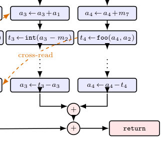
<figcaption class="paper-figure-caption"><b>Fig 4.</b> Fig. 4: Illustration of active chains in input programs.</figcaption>
</figure>
<figure class="paper-figure-card">
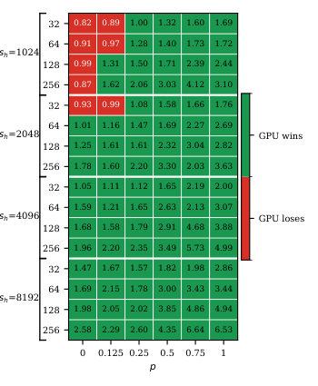
<figcaption class="paper-figure-caption"><b>Fig 5.</b> Fig. 5: GPU acceleration results for host-side static analysis.</figcaption>
</figure>
</div>

<p><strong>Summary.</strong> This paper presents a novel static analysis technique to detect 'dead' measurement outcomes in hybrid quantum-classical programs. By performing semantics-aware abstract interpretation, it identifies redundant gates invisible to standard circuit optimizers. The method is highly efficient, utilizing an SSA-style intermediate representation for GPU acceleration, significantly improving the optimization potential of quantum algorithms.</p>
<p><strong>Why it may be interesting.</strong> This work directly addresses compiler optimization for near-term quantum devices by providing a necessary layer of analysis that accounts for classical control flow dependencies, which is crucial for realizing complex hybrid algorithms.</p>
<details>
<summary>Detailed structure</summary>
<p><strong>Main problem.</strong> The core problem is identifying measurement outcomes in hybrid quantum-classical programs that are semantically non-contributory, meaning they do not affect the final result despite being read by the classical host.</p>
<p><strong>Main result.</strong> The proposed semantics-aware analysis identifies significantly more redundant measurements than syntactic methods and can remove over 30% of gates even after state-of-the-art circuit optimizers have run.</p>
<p><strong>Method.</strong> It employs a novel, semantics-aware static analysis based on abstract interpretation to track variable dependencies across the host program's execution path.</p>
<p><strong>Model / system.</strong> The system modeled is hybrid quantum-classical computation, where a quantum circuit interacts with a classical host program that consumes measurement outcomes. The analysis handles these interactions by tracking state changes through abstract values and dependency sets.</p>
<p><strong>Key observables.</strong> Non-contributory measurement outcomes ($M_{nc}$) and the resulting redundant quantum gates that can be safely pruned.</p>
<p><strong>Important parameters / regimes.</strong> The efficiency gains are measured by gate removal percentages (e.g., 37.98% standalone removal) and GPU speedups (up to 6.53x).</p>
<p><strong>Assumptions / limitations.</strong> The analysis assumes the ability to lower host programs to an SSA-style intermediate representation for efficient, parallel execution on a GPU backend.</p>
<p><strong>Figures summary.</strong> Figure 1 illustrates how initial values from non-contributory outcomes allow identifying redundant quantum gates. Figure 2 provides an overview of the full optimization flow: Host analysis $
ightarrow$ DGE pruning $
ightarrow$ GPU acceleration via SSA lowering.</p>
<p><strong>Paper structure.</strong> The paper introduces the problem, details the semantics-aware abstract interpretation method (including handling state transitions and dependencies), proves its soundness using formal lemmas related to return values, presents the SSA lowering for GPU execution, and evaluates it across various quantum applications.</p>
</details>
<details>
<summary>Abstract</summary>
<p>Hybrid programs combine a quantum circuit with a classical host program that consumes measurement outcomes. In such programs, an outcome may be syntactically read by the host but semantically non-contributory: changing the outcome cannot change the returned value. Such outcomes obscure gates that are dead only relative to the host semantics, and are therefore invisible to circuit-local optimizers.   We present a semantics-aware host-side static analysis that identifies non-contributory measurement outcomes by abstract interpretation, and prove its soundness. We implement the analysis and evaluate it on $24$ application-faithful hybrid workloads across quantum chemistry, optimization, quantum machine learning, and quantum finance. Compared with a syntactic liveness baseline, our analysis identifies more than $4\times$ as many non-contributory measurements, and it standalone enables the removal of $37.98\%$ of total gates on average. Even after the state-of-the-art optimizers like Qiskit, t|ket$\rangle$, and PyZX have already optimized the circuits, our analysis still enables removal of more than $30\%$ of the post-optimized gates, showing that the host-semantic opportunities exposed by our analysis are not subsumed by circuit-local optimization. To scale our analysis, we further lower host programs to an SSA-style levelized intermediate representation that exposes level-wise parallelism for GPU execution, and implement a CUDA backend. We prove that this lowering preserves the analysis result, and the evaluation shows speedups of up to $6.53\times$ over a sequential baseline as structural parallelism increases.</p>
</details>
<p><sub><a href="#top">↑ back to top</a></sub></p>

<p><a id="paper-2607.11003"></a></p>
<h3 id="ferroelectric-superconducting-interaction-in-epitaxial-yba2cu3o7-batio3-films"><a href="http://arxiv.org/abs/2607.11003v1">Ferroelectric--Superconducting Interaction in Epitaxial YBa2Cu3O7-δ/BaTiO3 Films</a></h3>
<p><strong>Authors:</strong> Louis Oppong-Antwi, David L. Cortie, Qi Zhang, Avi Bendavid, Nagarajan Valanoor, Wendy Purches, Golrokh Akhgar<br>
<strong>Type:</strong> experiment · <strong>Category:</strong> strongly correlated electrons · <strong>PDF:</strong> <a href="https://arxiv.org/pdf/2607.11003v1">https://arxiv.org/pdf/2607.11003v1</a><br>
<strong>Analysis basis:</strong> full PDF text, analyzed in chunks
<strong>Topic relevance:</strong> <code>spintronics-quantum-optics interface</code> <strong>3/5</strong> · <code>driven-dissipative phase transition</code> <strong>1/5</strong></p>
<div class="figure-strip-hint">↔ Scroll figures horizontally</div>
<div class="paper-figures-scroll">
<figure class="paper-figure-card">
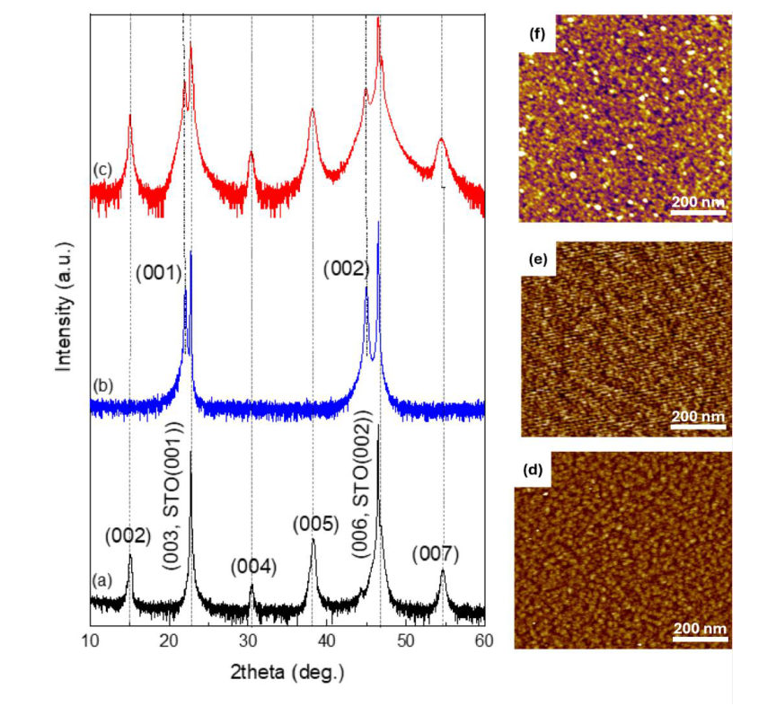
<figcaption class="paper-figure-caption"><b>Fig 1.</b> Fig. 1 The XRD patterns of samples, (a) YBCO, (b) BTO and (c) YBCO/BTO/YBCO films and AFM image of (d) YBCO, (e) BTO and (f) YBCO/BTO/YBCO. Each AFM image of a 2 µm × 2</figcaption>
</figure>
<figure class="paper-figure-card">
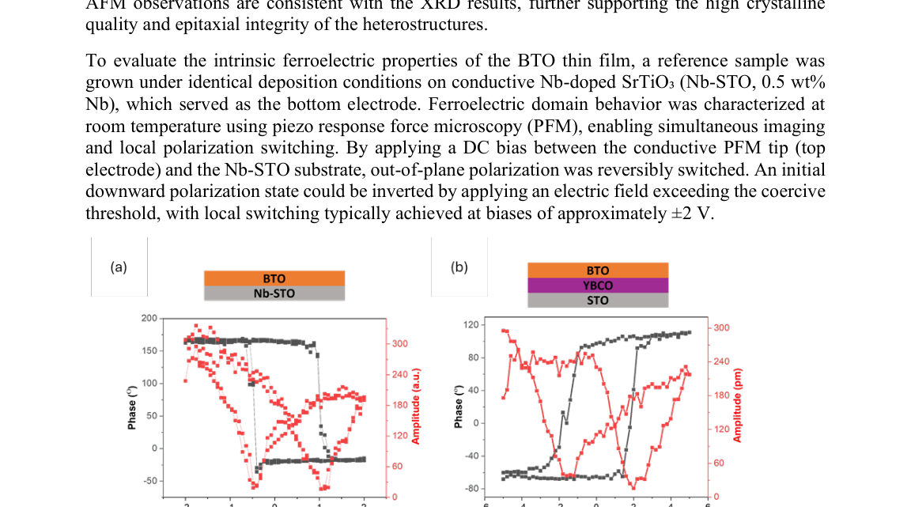
<figcaption class="paper-figure-caption"><b>Fig 2.</b> Fig. 2 Local PFM amplitude (red) and phase (black) hysteresis curve of (a) BTO/nb-STO, (b)</figcaption>
</figure>
<figure class="paper-figure-card">
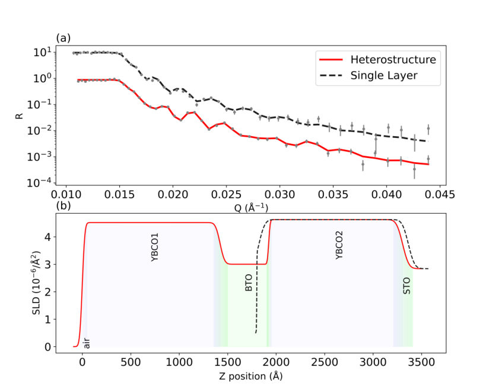
<figcaption class="paper-figure-caption"><b>Fig 3.</b> Fig. 3 (a) Neutron reflectometry curve of YBCO and YBCO/BTO/YBCO, (b) corresponding</figcaption>
</figure>
<figure class="paper-figure-card">
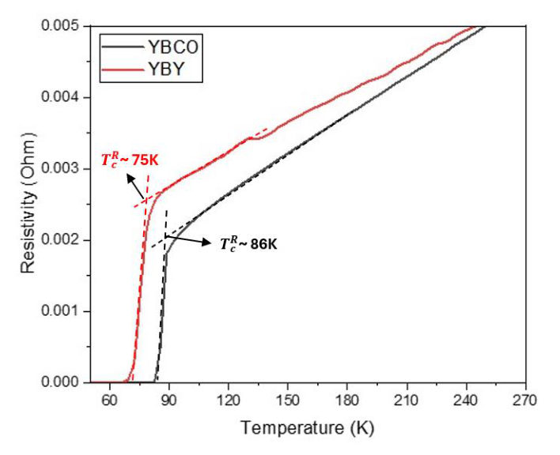
<figcaption class="paper-figure-caption"><b>Fig 4.</b> Fig. 4 Resistance versus temperature of YBCO (black line) and YBCO/BTO/YBCO (YBY)(red</figcaption>
</figure>
<figure class="paper-figure-card">
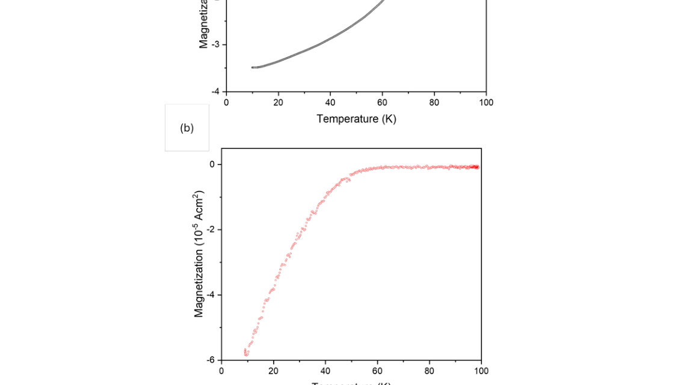
<figcaption class="paper-figure-caption"><b>Fig 5.</b> Fig. 5 ZFC M(T) curves (a)YBCO), and (b) YBCO/BTO/YBCO films measured under an applied</figcaption>
</figure>
</div>

<p><strong>Summary.</strong> The authors report on $    ext{BTO}/   ext{YBCO}$ heterostructures to experimentally investigate the predicted coupling between ferroelectric polarization and superconductivity. By measuring $T_c$ using resistivity and magnetization, they demonstrate that the inclusion of the BTO layer significantly lowers the superconducting transition temperature in YBCO films. This establishes these interfaces as promising platforms for engineering tunable quantum electronic devices.</p>
<p><strong>Why it may be interesting.</strong> This work directly probes an interface where two distinct quantum phenomena—superconductivity (BCS-like pairing) and ferroelectricity (polar ordering)—interact, which is a key area of research in correlated electron systems and emergent quantum states.</p>
<details>
<summary>Detailed structure</summary>
<p><strong>Main problem.</strong> The study investigates how ferroelectric polarization influences the superconducting critical temperature ($T_c$) in epitaxial oxide heterostructures.</p>
<p><strong>Main result.</strong> The presence of a $    ext{BaTiO}_3$ layer significantly suppresses the superconducting transition temperatures measured via both resistivity and magnetization curves compared to single-layer YBCO films.</p>
<p><strong>Method.</strong> The research employed multiple advanced characterization techniques, including Pulsed Laser Deposition (PLD) for film growth, Piezoresponse Force Microscopy (PFM), Neutron Reflectometry (NR), and transport/magnetization measurements ($R(T)$ and $M(T)$).</p>
<p><strong>Model / system.</strong> The physical system is epitaxial $  ext{BaTiO}<em 7-_delta="7-\delta">3/   ext{YBa}_2  ext{Cu}_3   ext{O}</em>_3$ substrates. The study focuses on the interfacial coupling between ferroelectric polarization and superconducting pairing.}$ ($   ext{BTO}/   ext{YBCO}$) heterostructures grown on $ ext{SrTiO</p>
<p><strong>Key observables.</strong> Superconducting transition temperatures ($T_{\mathrm{C}}^{R}$, $T_{\mathrm{C}}^{M}$), ferroelectric switching behavior (PFM hysteresis loops), film roughness, and lattice parameters.</p>
<p><strong>Important parameters / regimes.</strong> The coupling strength between polarization and superconductivity; the oxygen stoichiometry ($\delta$) in YBCO; and the thickness of the BTO layer relative to superconducting coherence lengths.</p>
<p><strong>Assumptions / limitations.</strong> It is assumed that the observed suppression of $T_c$ can be attributed to interfacial charge screening, strain effects, or structural disorder induced by the ferroelectric layer.</p>
<p><strong>Figures summary.</strong> Figures likely show PFM hysteresis loops confirming switching, XRD patterns verifying epitaxial growth, and $R(T)$ vs. $M(T)$ curves demonstrating the suppression of $T_c$ in the heterostructure compared to single layers.</p>
<p><strong>Paper structure.</strong> The paper follows a structure of establishing the physical platform ($ ext{BTO}/   ext{YBCO}$ films), characterizing both ferroelectric and superconducting properties using multiple techniques, presenting quantitative measurements showing $T_c$ suppression, and concluding with implications for tunable oxide electronics.</p>
</details>
<details>
<summary>Abstract</summary>
<p>Microscopic theories predict that the critical temperature of a superconducting layer can be strongly modified in proximity to a ferroelectric; however, experimental evidence is lacking. We report on BaTiO3 (BTO)/YBa2Cu3O7-δ (YBCO) heterostructures grown on SrTiO3 (001) substrates using pulsed laser deposition (PLD), with precise control of growth conditions and oxygen stoichiometry. Piezoresponse force microscopy confirms ferroelectric switching within both single-layer and heterostructured films. Neutron reflectometry measurements show low roughness parameters for the buried interfaces, which is critical for mediating the interfacial coupling between superconductivity and ferroelectric polarization. The superconducting transition temperature ($T_{\mathrm{C}}^{R}$) measured from the $R(T)$ curve of the single-layer YBCO was approximately 86 K, and a transition temperature ($T_{\mathrm{C}}^{M}$) of approximately 80-85 K was observed from the $M(T)$ curve. For the heterostructure film (YBCO/BTO/YBCO) grown under the same conditions, both resistivity and magnetization measurements indicate lower transition temperatures of approximately 75 K and approximately 55 K, respectively, as well as a lower overall susceptibility. These findings highlight the need to combine multiple techniques to characterize BTO/YBCO heterostructures and identify subtle features of the ferroelectric--superconducting coupling. This establishes BTO/YBCO heterostructures as promising systems for tunable oxide electronics and reconfigurable superconducting devices.</p>
</details>
<p><sub><a href="#top">↑ back to top</a></sub></p>

<p><a id="paper-2607.10283"></a></p>
<h3 id="resolvent-algebras-and-limit-states-of-interacting-canonical-ensembles"><a href="http://arxiv.org/abs/2607.10283v1">Resolvent algebras and limit states of interacting canonical ensembles</a></h3>
<p><strong>Authors:</strong> Detlev Buchholz<br>
<strong>Type:</strong> theory · <strong>Category:</strong> statistical mechanics · <strong>PDF:</strong> <a href="https://arxiv.org/pdf/2607.10283v1">https://arxiv.org/pdf/2607.10283v1</a><br>
<strong>Analysis basis:</strong> full PDF text, analyzed in chunks
<strong>Topic relevance:</strong> <code>Keldysh / 2PI / non-Gaussian methods</code> <strong>2/5</strong> · <code>methods for driven-dissipative</code> <strong>2/5</strong> · <code>non-equilibrium dynamics</code> <strong>2/5</strong> · <code>analog quantum simulation</code> <strong>1/5</strong> · <code>correlated / nonlocal dissipation</code> <strong>1/5</strong> · <code>correlated cavity matter</code> <strong>1/5</strong> · <code>driven-dissipative phase transition</code> <strong>1/5</strong> · <code>entanglement &amp; information structure</code> <strong>1/5</strong> · <code>non-equilibrium universality</code> <strong>1/5</strong></p>
<div class="figure-strip-hint">↔ Scroll figures horizontally</div>
<div class="paper-figures-scroll">
<figure class="paper-figure-card">
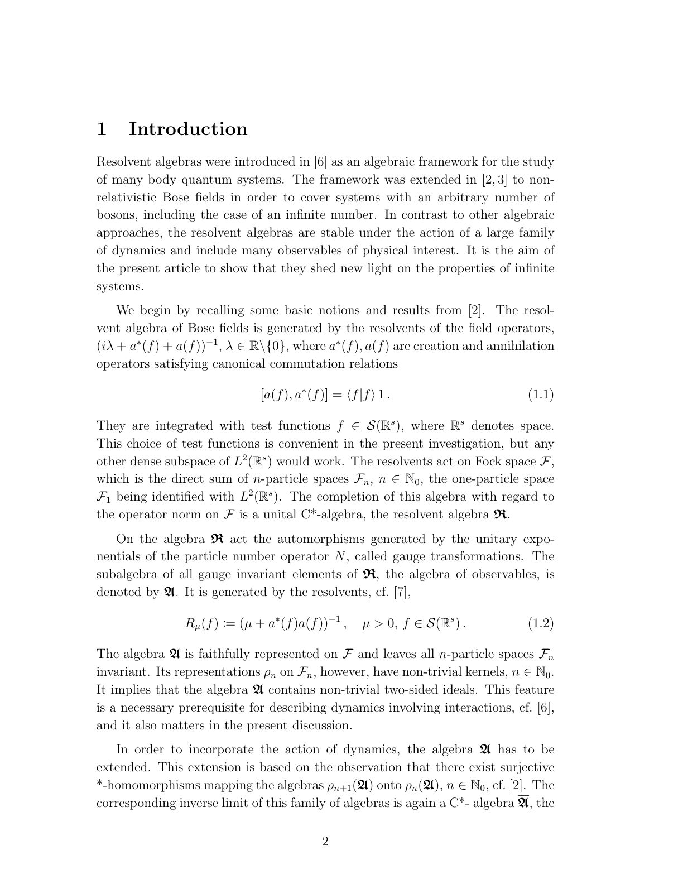
<figcaption class="paper-figure-caption"><b>Fig 1.</b> Low-resolution page preview, page 2</figcaption>
</figure>
<figure class="paper-figure-card">
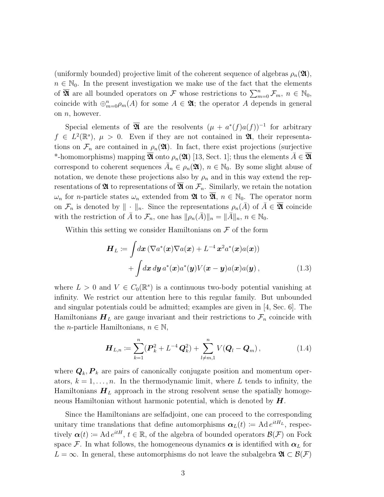
<figcaption class="paper-figure-caption"><b>Fig 2.</b> Low-resolution page preview, page 3</figcaption>
</figure>
<figure class="paper-figure-card">
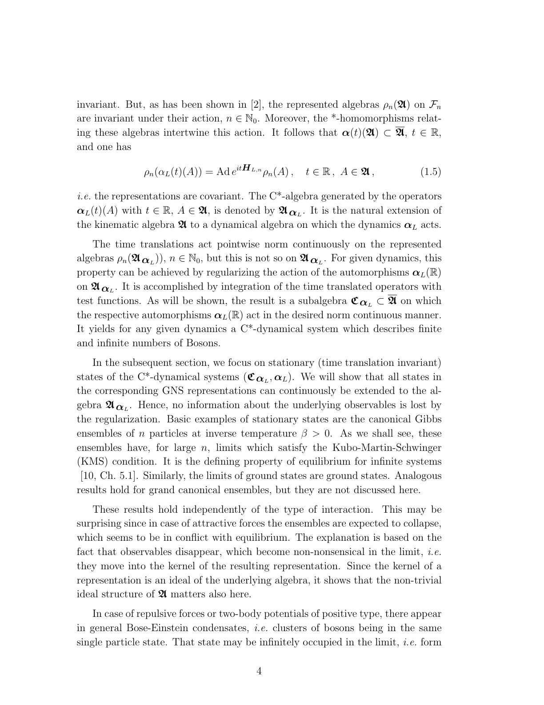
<figcaption class="paper-figure-caption"><b>Fig 3.</b> Low-resolution page preview, page 4</figcaption>
</figure>
<figure class="paper-figure-card">
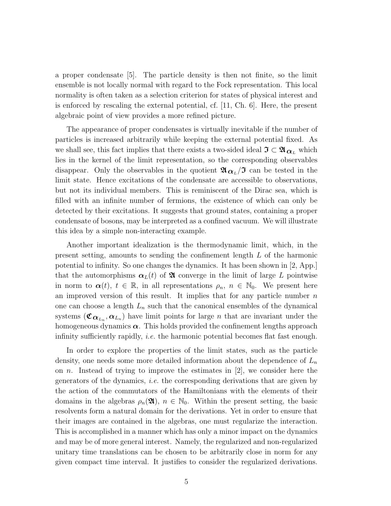
<figcaption class="paper-figure-caption"><b>Fig 4.</b> Low-resolution page preview, page 5</figcaption>
</figure>
<figure class="paper-figure-card">
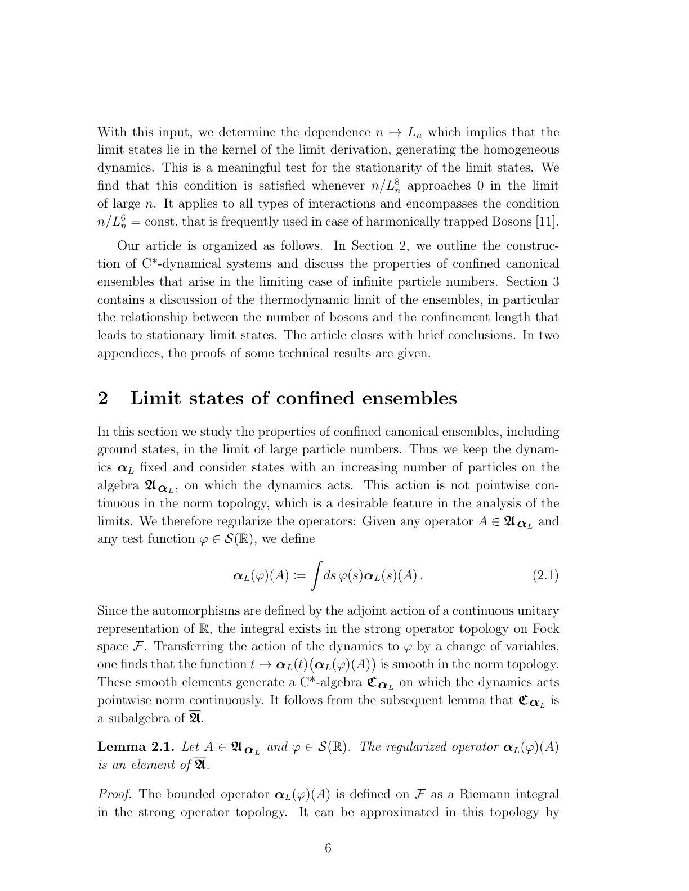
<figcaption class="paper-figure-caption"><b>Fig 5.</b> Low-resolution page preview, page 6</figcaption>
</figure>
</div>

<p><strong>Summary.</strong> This paper develops a rigorous mathematical framework using resolvent algebras to study the thermodynamic limit of interacting bosonic ensembles. It proves that the limiting states must satisfy fundamental physical criteria like the KMS condition or be ground states. This provides deep theoretical insight into how equilibrium properties emerge in large, interacting quantum systems.</p>
<p><strong>Why it may be interesting.</strong> This work provides advanced mathematical tools (resolvent algebras, C*-dynamics) to rigorously handle phase transitions and equilibrium states in interacting quantum many-body systems, which is crucial for understanding Bose-Einstein condensates and other strongly correlated regimes.</p>
<details>
<summary>Detailed structure</summary>
<p><strong>Main problem.</strong> The study focuses on determining the limit states of canonical ensembles for interacting bosons as particle number or confinement length approaches infinity.</p>
<p><strong>Main result.</strong> The limit states are shown to satisfy either the KMS condition or be ground states, providing a rigorous framework for analyzing thermodynamic limits in bosonic systems.</p>
<p><strong>Method.</strong> The analysis employs resolvent algebras and C*-dynamical systems theory to study time evolution via automorphisms and weak-star convergence of Gibbs ensembles.</p>
<p><strong>Model / system.</strong> The system models interacting bosons confined by harmonic forces, described on Fock space. The Hamiltonian is analyzed in the limit where confinement length $L 	o \infty$ (thermodynamic limit).</p>
<p><strong>Key observables.</strong> KMS condition states, ground states, and observables that survive the limiting process.</p>
<p><strong>Important parameters / regimes.</strong> Temperature ($eta$), particle number ($n$), and confining force strength/length ($L$).</p>
<p><strong>Assumptions / limitations.</strong> The analysis relies on the existence of suitable regularizations for operators to maintain mathematical structure in the limit.</p>
<p><strong>Paper structure.</strong> The paper builds from defining the resolvent algebra and dynamics ($\mathcal{A}_{\alpha L}$), establishing convergence theorems for the thermodynamic limit ($L 	o \infty$), and deriving relations between confining forces and particle numbers based on stationarity conditions.</p>
</details>
<details>
<summary>Abstract</summary>
<p>The limit states of canonical ensembles of a large number of interacting bosons at a given temperature, which are confined by harmonic forces, are studied in the framework of the resolvent algebra. It is shown that the limits satisfy the KMS condition or are ground states, regardless of the type of interaction. In case of attractive forces, where the ensembles collapse, observables that become meaningless in the limit disappear from the limit representations. For repulsive forces, this can also happen if condensates with an infinite number of particles in the same state (proper condensates) appear in the limit. The resulting structures and their interpretation are illustrated by a simple model. The study of vanishing harmonic forces (thermodynamic limit) involves changes of the dynamics. It is conveniently based on derivations acting on the algebra. They are given by the commutator of the Hamiltonians with the elements of the algebra. To ensure that the images remain in the algebra, the interaction must be regularized. This is accomplished in a manner that has only a minor impact on the dynamics and may be of broader interest. With this input a relation between the strength of the confining harmonic forces and the number of particles in the ensembles is derived from the condition that the limit states are to be stationary (invariant) under the adjoint action of the unconfined, spatially homogeneous limit dynamics. This relation encompasses the conditions that are frequently used in studies of Bose-Einstein condensates.</p>
</details>
<p><sub><a href="#top">↑ back to top</a></sub></p>

<p><a id="paper-2607.10996"></a></p>
<h3 id="analytical-mobility-edge-in-nonreciprocal-quasiperiodic-lattices-with-next-nearest-neighbor-hopping"><a href="http://arxiv.org/abs/2607.10996v1">Analytical mobility edge in nonreciprocal quasiperiodic lattices with next-nearest-neighbor hopping</a></h3>
<p><strong>Authors:</strong> Wenmin Wang, Xiaosen Yang, Xianqi Tong<br>
<strong>Type:</strong> theory · <strong>Category:</strong> disordered systems and neural networks · <strong>PDF:</strong> <a href="https://arxiv.org/pdf/2607.10996v1">https://arxiv.org/pdf/2607.10996v1</a><br>
<strong>Analysis basis:</strong> full PDF text, analyzed in chunks
<strong>Topic relevance:</strong> <code>analog quantum simulation</code> <strong>2/5</strong> · <code>driven-dissipative phase transition</code> <strong>2/5</strong> · <code>Frenkel-Kontorova</code> <strong>1/5</strong> · <code>Keldysh / 2PI / non-Gaussian methods</code> <strong>1/5</strong> · <code>Kondo &amp; dissipative impurity</code> <strong>1/5</strong> · <code>methods for driven-dissipative</code> <strong>1/5</strong> · <code>non-equilibrium dynamics</code> <strong>1/5</strong> · <code>non-equilibrium universality</code> <strong>1/5</strong></p>
<div class="figure-strip-hint">↔ Scroll figures horizontally</div>
<div class="paper-figures-scroll">
<figure class="paper-figure-card">
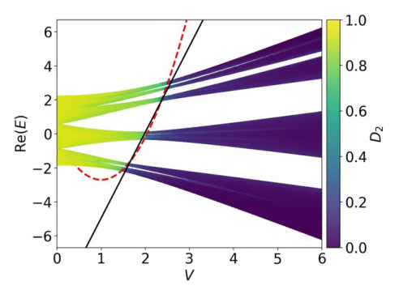
<figcaption class="paper-figure-caption"><b>Fig 1.</b> FIG. 1. Hermitian limit β = δ = 0 (t = 1, J = 0.1, L = 987, PBC). The color scale shows the fractal dimension D2 (bright: extended, D2 →1; dark: localized, D2 →0). The Biddle ME of Eq. (10) (black solid line) and the point-matching ME of Eq. (9) (red dashed line) are two analytical approximations to the same extended–localized boundary; both follow the numerical transition closely for J ≪t.</figcaption>
</figure>
<figure class="paper-figure-card">
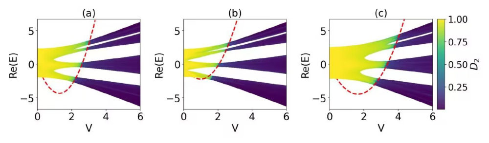
<figcaption class="paper-figure-caption"><b>Fig 2.</b> FIG. 2. Nonreciprocal phase diagrams (t = 1, J = 0.1, L = 610, PBC) together with the point-matching ME of Eq. (9) (red dashed lines). (a) NN nonreciprocity only, β = 0.25, δ = 0 (teff = e0.25 ≈1.28, Jeff = 0.1): the boundary shifts rigidly to larger V . (b) NNN nonreciprocity only, β = 0, δ = 0.25 (teff = 1, Jeff = 0.1 e0.25 ≈0.13): the curvature of the boundary decreases and the parabola widens. (c) Combined case, β = δ = 0.5: the shift and the widening superpose. In all three panels the analytical parabola, with no adjustable parameters, follows the extended–localized boundary.</figcaption>
</figure>
<figure class="paper-figure-card">
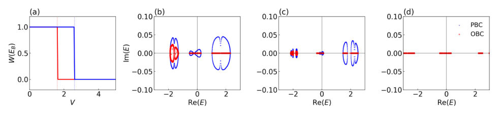
<figcaption class="paper-figure-caption"><b>Fig 3.</b> FIG. 3. Skin-effect topology for NNN nonreciprocity (β = 0, δ = 0.25, t = 1, J = 0.1). (a) Spectral winding numbers W(EB) at two base energies near the band edges, EB = −2.0 (red) and EB = 2.8 (blue), as a function of V . The winding number at the lower band edge drops at V1 ≈1.6, marking the onset of the mixed phase where the ME enters the spectrum and the first localized states appear. The winding number at the upper band edge drops at V2 ≈2.6, marking the end of the mixed phase where the last extended states localize. The interval [V1, V2] defines the mixed phase in which extended and localized states coexist at different energies. (b)–(d) Complex energy spectra under PBC (blue dots) and...</figcaption>
</figure>
<figure class="paper-figure-card">
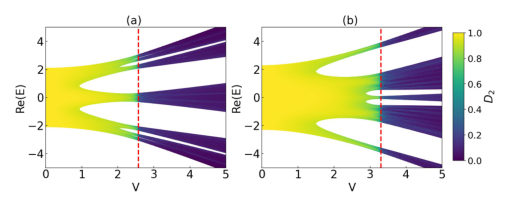
<figcaption class="paper-figure-caption"><b>Fig 4.</b> FIG. 4. Solvable limits (L = 610, PBC). (a) J = 0, t = 1, β = 0.25: the localization transition is energy independent and occurs at Vc = 2t e|β| ≈2.57 (red dashed vertical line). (b) t = 0, J = 1, δ = 0.5: the transition is energy independent and occurs at Vc = 2J e|δ| ≈3.30 (red dashed vertical line). In both limits the ME degenerates into a vertical line, and no energy-dependent boundary exists. In (b) each eigenstate extends over a single sublattice, so the fractal dimension of extended states is slightly reduced, D2 ≈1 −ln 2/ ln L.</figcaption>
</figure>
<figure class="paper-figure-card">
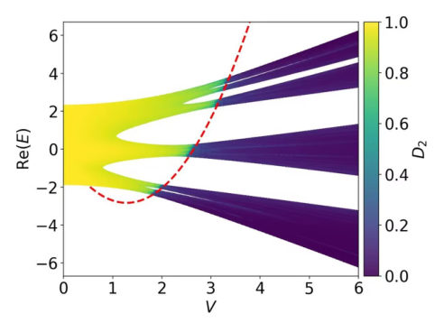
<figcaption class="paper-figure-caption"><b>Fig 5.</b> FIG. 5. Gauge-related case δ = 2β (β = 0.25, δ = 0.50, ˜δ = 0; t = 1, J = 0.1, L = 610, PBC). The color scale shows the fractal dimension D2. The red dashed line is the point- matching ME of Eq. (9) with teff = e0.25 and Jeff = 0.1 e0.50. Although the imaginary gauge transformation maps the open chain to the Hermitian model, it is not single valued on the PBC ring: the bulk boundary is shifted to larger V relative to the Hermitian Biddle line [whose E = 0 crossing lies at V ≈1.98, versus V ≈2.65 for the parabola] and is well described by the effective-hopping parabola.</figcaption>
</figure>
</div>

<p><strong>Summary.</strong> This paper analytically determines the mobility edge in complex nonreciprocal quasiperiodic lattices featuring both nearest-neighbor and next-nearest-neighbor hopping. By extending established point-matching techniques, the authors derive a parabolic boundary that quantifies the transition between extended and localized electronic states. The findings are significant because they provide testable analytical tools connecting topological invariants (winding numbers) to transport properties in non-Hermitian systems.</p>
<p><strong>Why it may be interesting.</strong> This work provides a highly compact analytical framework connecting energy-dependent localization, spectral topology, and nonreciprocity in quasiperiodic systems, which is directly applicable to engineered photonic or electrical circuits.</p>
<details>
<summary>Detailed structure</summary>
<p><strong>Main problem.</strong> The study investigates localization transitions and spectral topology within nonreciprocal quasiperiodic lattices that include next-nearest-neighbor hopping.</p>
<p><strong>Main result.</strong> The authors derive a closed-form, parabolic expression for the energy-dependent mobility edge, showing how nonreciprocity shifts and broadens the coexistence window of extended/localized states. Spectral winding numbers are used to precisely delineate this mixed phase.</p>
<p><strong>Method.</strong> The research extends the Fermi-surface point-matching method to handle nonreciprocal hopping, allowing for the derivation of effective hopping amplitudes and an analytical mobility edge formula.</p>
<p><strong>Model / system.</strong> The model is a one-dimensional, non-Hermitian generalization of the Aubry-André model. It incorporates both nearest-neighbor (NN) and next-nearest-neighbor (NNN) hopping terms, where the hoppings are made nonreciprocal via parameters $eta$ and $\delta$.</p>
<p><strong>Key observables.</strong> Mobility Edge ($E_c$), spectral winding numbers ($W(E_B)$), effective dispersion ($\epsilon(\kappa)$), and fractal dimension ($D_2$).</p>
<p><strong>Important parameters / regimes.</strong> Nonreciprocity parameters ($eta, \delta$), potential strength ($V$), hopping amplitudes ($t, J$), and the quasiperiodic frequency $\alpha$.</p>
<p><strong>Assumptions / limitations.</strong> The analysis relies on extending the point-matching method to nonreciprocal hopping; quantitative comparisons suggest accuracy when NNN hopping is a perturbation.</p>
<p><strong>Figures summary.</strong> Figures illustrate the Hermitian limit comparison (analytical vs. numerical boundary), phase diagrams showing how NN and NNN nonreciprocity shift/widen the mobility edge parabola, and spectral topology plots using winding numbers to bracket the mixed phase region.</p>
<p><strong>Paper structure.</strong> The paper first introduces the physical model and the challenge of nonreciprocity. It then details the mathematical extension of the point-matching method to derive the analytical ME formula. Finally, it uses both exact diagonalization and topological invariants (winding numbers) to confirm the derived boundary and characterize the mixed phase.</p>
</details>
<details>
<summary>Abstract</summary>
<p>We investigate localization transitions and spectral topology in a one-dimensional non-Hermitian generalization of the Aubry-André model in which both the nearest-neighbor and the next-nearest-neighbor hopping amplitudes are nonreciprocal. By extending the Fermi-surface point-matching method to nonreciprocal hopping, we derive a closed-form expression for the energy-dependent mobility edge in which the two nonreciprocity parameters are absorbed into exponentially renormalized effective hopping amplitudes. The mobility edge forms a single parabola in the energy--potential plane: nearest-neighbor nonreciprocity rigidly shifts the localization boundary toward stronger potentials, whereas next-nearest-neighbor nonreciprocity reduces the curvature of the boundary and thereby broadens the energy window in which extended and localized states coexist. Exact diagonalization confirms the analytical boundary for purely nearest-neighbor, purely next-nearest-neighbor, and combined nonreciprocity, and recovers the known Hermitian mobility edge in the reciprocal limit. We further analyze the spectral topology under periodic boundary conditions and show that the spectral winding numbers evaluated at base energies near the two band edges directly bracket the mixed phase: the winding number at the lower band edge drops when the mobility edge enters the spectrum and the first localized states appear, while the winding number at the upper band edge drops when the last extended states localize, delineating the full potential-strength window over which extended and localized states coexist. These results provide a compact analytical framework that connects energy-dependent localization, spectral topology, and nonreciprocity in quasiperiodic lattices, and they are directly testable in photonic, atomic, and electrical-circuit platforms.</p>
</details>
<p><sub><a href="#top">↑ back to top</a></sub></p>

<p><a id="paper-2607.10865"></a></p>
<h3 id="dimensional-and-spin-interpolation-for-the-omath790math-model-from-exact-anchors-to-rg-improved-critical-exponents"><a href="http://arxiv.org/abs/2607.10865v1">Dimensional and Spin Interpolation for the O$(n)$ Model: From Exact Anchors to RG-Improved Critical Exponents</a></h3>
<p><strong>Authors:</strong> Kumar Ghosh<br>
<strong>Type:</strong> theory · <strong>Category:</strong> statistical mechanics · <strong>PDF:</strong> <a href="https://arxiv.org/pdf/2607.10865v1">https://arxiv.org/pdf/2607.10865v1</a><br>
<strong>Analysis basis:</strong> full PDF text, analyzed in chunks
<strong>Topic relevance:</strong> <code>analog quantum simulation</code> <strong>2/5</strong> · <code>non-equilibrium universality</code> <strong>2/5</strong> · <code>Keldysh / 2PI / non-Gaussian methods</code> <strong>1/5</strong> · <code>correlated / nonlocal dissipation</code> <strong>1/5</strong> · <code>driven-dissipative phase transition</code> <strong>1/5</strong> · <code>entanglement &amp; information structure</code> <strong>1/5</strong> · <code>methods for driven-dissipative</code> <strong>1/5</strong> · <code>non-equilibrium dynamics</code> <strong>1/5</strong></p>
<div class="figure-strip-hint">↔ Scroll figures horizontally</div>
<div class="paper-figures-scroll">
<figure class="paper-figure-card">
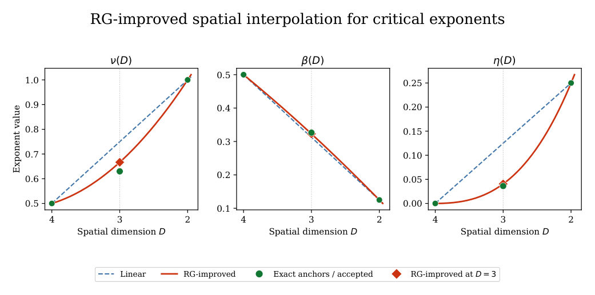
<figcaption class="paper-figure-caption"><b>Fig 1.</b> FIG. 1. RG-improved spatial interpolation for ν, β, η of the Ising (n = 1) universality class as functions of D ∈[2, 4]. Dashed blue: linear interpolation in δD = 1/(D −1). Solid red: RG-improved polynomials (22), (23), (24). Filled circles: exact anchor values (D = 2: Onsager/Yang [7, 13]; D = 4: mean-field [14]). Open circles: accepted values at D = 3 [9, 10]. Diamonds: RG-improved predictions at D = 3.</figcaption>
</figure>
<figure class="paper-figure-card">
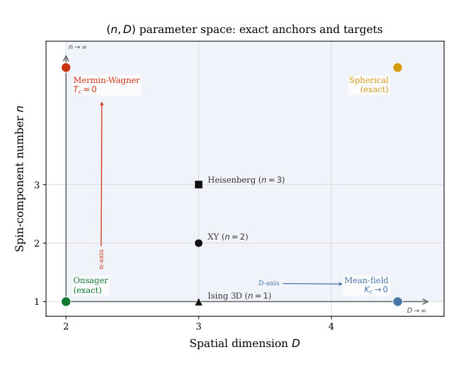
<figcaption class="paper-figure-caption"><b>Fig 2.</b> FIG. 2. The (n, D) parameter space for the O(n) model. Four colored markers: exact-anchor corners (Onsager [7], mean-field [14], Mermin–Wagner [21], Berlin–Kac spherical [11]). Gray markers: physical targets at D = 3 (Ising, XY, Heisenberg). Blue arrow: spatial (D-axis) interpolation direction. Red arrow: spin (n-axis) interpolation direction.</figcaption>
</figure>
<figure class="paper-figure-card">
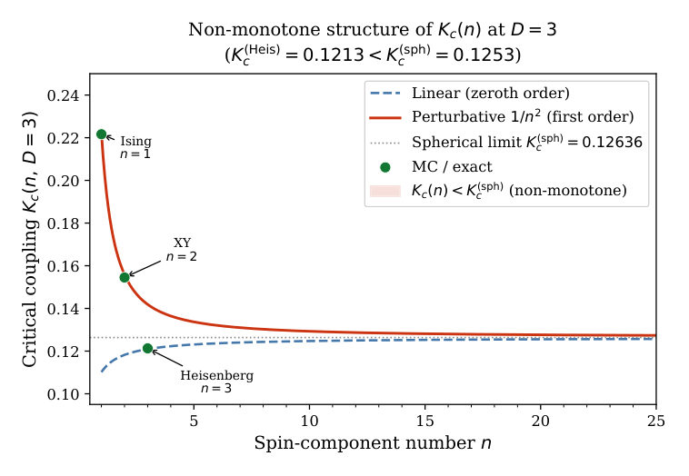
<figcaption class="paper-figure-caption"><b>Fig 3.</b> FIG. 3. Critical coupling Kc(n) at D = 3 on the simple-cubic lattice. Filled circles: Monte Carlo values [9, 23, 24]. Diamond: exact spherical limit K(sph) c = W3/4 ≈0.12636 [11, 20]. Dashed blue: zeroth-order affine interpolation (36). Solid red: first- order perturbative 1/n2 formula (39). The shaded region marks Kc(n) &lt; K(sph) c , demonstrating the non-monotone structure that violates Proposition 1.</figcaption>
</figure>
<figure class="paper-figure-card">
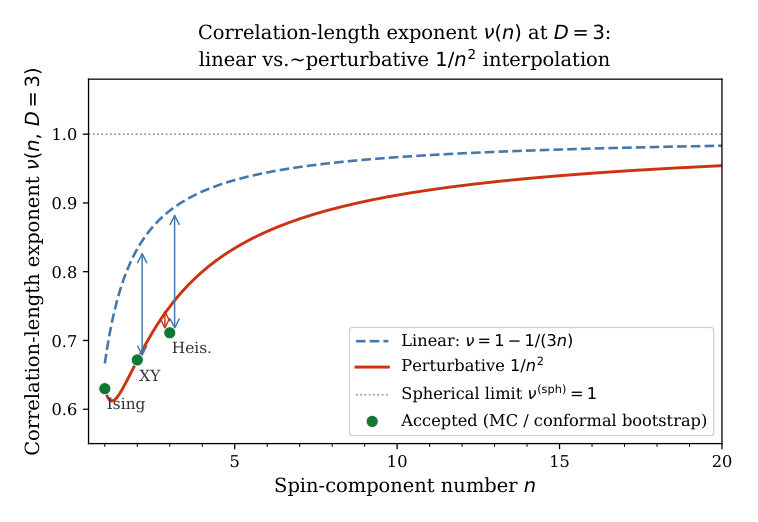
<figcaption class="paper-figure-caption"><b>Fig 4.</b> FIG. 4. Correlation-length exponent ν(n) at D = 3. Filled circles: accepted values [9, 10, 23, 24]; diamond: exact spherical limit ν(sph) = 1 [22]. Dashed blue: zeroth-order bivariate formula ν(0) = 1 −1/(3n) (59). Solid red: first-order perturbative formula (49). The perturbative result reduces the Heisenberg error from 25% to 5.4%.</figcaption>
</figure>
</div>

<p><strong>Summary.</strong> This paper presents a powerful two-axis interpolation framework to study critical behavior in the O(n) model by treating spatial dimension (D) and spin number (n) independently. By constraining polynomial fits using known exact limits, the authors achieve highly accurate predictions for critical exponents across various regimes. This work establishes a unified, predictive methodology for analyzing complex phase transitions.</p>
<p><strong>Why it may be interesting.</strong> While focused on classical critical phenomena, the rigorous mathematical machinery of parameter-free interpolation and RG constraints is highly relevant for understanding quantum phase transitions in many-body systems where dimensionality or interaction strength can be treated as continuous parameters.</p>
<details>
<summary>Detailed structure</summary>
<p><strong>Main problem.</strong> To develop a unified and predictive interpolation framework for critical phenomena across the O(n) universality family by treating both spatial dimension (D) and spin component number (n) as independent continuous parameters.</p>
<p><strong>Main result.</strong> The framework successfully predicts critical exponents like $
u(2.5)=0.7143$ and provides a highly accurate interpolation for $D=3$ using RG-improved polynomial fits, while also establishing structural compatibility criteria for the interpolation to be valid.</p>
<p><strong>Method.</strong> The authors employ two-axis interpolation techniques, connecting known exact limits (e.g., Onsager solution at D=2, Mean-Field theory at D-&gt;infinity) and utilizing Renormalization Group (RG) improved polynomial fitting constrained by known analytic structures.</p>
<p><strong>Model / system.</strong> The study focuses on the O(n) model, which generalizes the Ising model to spins with n components. The analysis is applied to critical phenomena in various dimensions ($D$) and spin values ($n$), including quantum-classical mappings for the Transverse Field Ising Model (TFIM).</p>
<p><strong>Key observables.</strong> Critical exponents ($
u, eta, \eta, \gamma$) and the critical coupling constant ($K_c$).</p>
<p><strong>Important parameters / regimes.</strong> Spatial dimension $D$, spin component number $n$, and the reduced temperature/coupling parameter $\epsilon = 4-D$.</p>
<p><strong>Assumptions / limitations.</strong> The interpolation requires that observables vary monotonically between the chosen anchor points; furthermore, the derivation of scaling relations relies on hyperscaling hypotheses valid below the upper critical dimension ($d_c=4$).</p>
<p><strong>Figures summary.</strong> Figures illustrate the comparison of interpolated exponents ($
u, eta, \eta$) versus $D$, comparing linear interpolation against RG-improved results and exact anchor values.</p>
<p><strong>Paper structure.</strong> The paper first establishes dimensional interpolation using two anchors (Onsager/Mean-Field) for the D-axis. It then develops spin interpolation along the n-axis, deriving necessary compatibility criteria. Finally, it unifies these concepts to create a predictive framework applicable across both axes simultaneously.</p>
</details>
<details>
<summary>Abstract</summary>
<p>We develop a two-axis interpolation framework for the O$(n)$ universality family, treating the spatial dimension $D$ and the spin-component number $n$ as independent continuous parameters connecting exact limiting solutions. On the spatial axis, anchoring between the Onsager solution at $D=2$ and mean-field theory at $D\to\infty$ yields a closed-form prediction for the 3D Ising critical coupling that agrees well with Monte Carlo benchmarks $K_c = 0.2204$ (benchmark: $0.22165$) with no adjustable parameters. Wilson--Fisher-constrained polynomial interpolation gives $ν=2/3$, $β=31/96$, and $η=35/864$ at $D=3$ (benchmarks: $0.6299$, $0.3265$, $0.0362$), and reproduces conformal-bootstrap results across $3 \le D < 4$. On the spin axis, we establish a necessary compatibility criterion: two-anchor interpolation succeeds only for observables that vary monotonically between the anchor values. The critical coupling $K_c(n)$ violates this criterion because the Heisenberg value falls below the spherical limit, whereas the correlation-length exponent $ν(n)$ satisfies it. A perturbative $1/n^2$ expansion yields $ν(3) = 0.7493$ (benchmark: $0.7112$), and propagation through exact scaling relations gives $β(3) = 0.3797$ (benchmark: $0.3689$) and $γ(3) = 1.489$ (benchmark: $1.396$), without introducing additional parameters. The framework naturally extends to non-integer spin, producing the prediction $ν(2.5) = 0.7143$ for the O$(2.5)$ universality class. These results establish dimensional and spin interpolation as a unified and predictive approach to critical phenomena, while clarifying the structural conditions under which interpolation succeeds.</p>
</details>
<p><sub><a href="#top">↑ back to top</a></sub></p>

<p><a id="paper-2607.09855"></a></p>
<h3 id="ergotropic-and-passive-contributions-on-the-phase-space-information-geometry-of-gaussian-states"><a href="http://arxiv.org/abs/2607.09855v1">Ergotropic and passive contributions on the phase-space information geometry of Gaussian states</a></h3>
<p><strong>Authors:</strong> Ivan Medina, Camila Raupp, Pedro B. Melo, Diogo O. Soares-Pinto<br>
<strong>Type:</strong> theory · <strong>Category:</strong> statistical mechanics · <strong>PDF:</strong> <a href="https://arxiv.org/pdf/2607.09855v1">https://arxiv.org/pdf/2607.09855v1</a><br>
<strong>Analysis basis:</strong> full PDF text, analyzed in chunks
<strong>Topic relevance:</strong> <code>entanglement &amp; information structure</code> <strong>2/5</strong> · <code>non-equilibrium dynamics</code> <strong>2/5</strong> · <code>non-equilibrium universality</code> <strong>2/5</strong> · <code>Keldysh / 2PI / non-Gaussian methods</code> <strong>1/5</strong> · <code>correlated / nonlocal dissipation</code> <strong>1/5</strong> · <code>driven-dissipative phase transition</code> <strong>1/5</strong> · <code>methods for driven-dissipative</code> <strong>1/5</strong></p>
<div class="figure-strip-hint">↔ Scroll figures horizontally</div>
<div class="paper-figures-scroll">
<figure class="paper-figure-card">
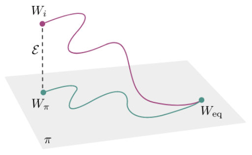
<figcaption class="paper-figure-caption"><b>Fig 1.</b> Figure 1. The trajectory of a Gaussian quantum state on the Wigner function statistical manifold is characterized by the Wigner- Fisher information, which can be separated into passive and ergotropic con- tributions. The passive component is associated with the evolution of the corresponding passive state along the thermal-state manifold represented by the surface π, while the ergotropic component cap- tures the geometric effect of energy stored through displacement and squeezing operations.</figcaption>
</figure>
<figure class="paper-figure-card">
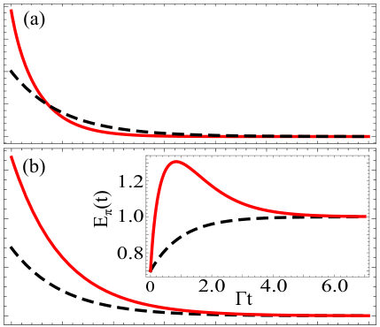
<figcaption class="paper-figure-caption"><b>Fig 2.</b> Figure 2. (a) Example of the ergotropic Mpemba effect. Considering two different initial states, ρs and ρd, we see that although ρs has ini- tially more ergotropy than ρd, a squeezing thermal state loses charge exponentially faster than the displaced thermal state, giving rise to the effect. (b) Mean energy of ρs and ρd and their associated passive mean energy (inset). We see that the passive energy associated to ρs is non monotonic in time. For all plots, quantities for ρs are shown in red-solid line and quantities for ρd are shown in black-dashed lines. The parameters we use are ω = 1.0, Γ = 0.1, r = 1.0, µ = 1.0, ¯neq = 0.5 and ¯nπ(0) = 0.2.</figcaption>
</figure>
<figure class="paper-figure-card">
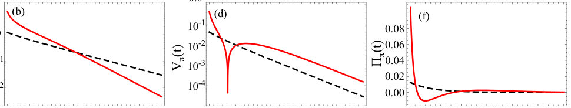
<figcaption class="paper-figure-caption"><b>Fig 3.</b> Figure 3. Degree of completion and statistical length as a function of time. Plots (a) and (b), respectively, show the quantities for ρd and ρs while the plots (c) and (d) are related to the passive states. We see that the degree of completion and statisical velocities for the passive state ρs π are not monotonic. This behavior happens because ρs π(t) is not a solution of the master Eq. (6). The plots (e) and (f) show the entropy production rates ΠW(t) and Ππ(t). The negative values reached by Ππ(t) suggests that the passive state ρs π(t) follows a non-Markovian dynamics. We use the same parameters as in Fig. 2.</figcaption>
</figure>
</div>

<p><strong>Summary.</strong> This paper connects quantum thermodynamics and information geometry by decomposing the Wigner-Fisher information for Gaussian states into passive and ergotropic parts. It shows that this decomposition allows the extractable work (ergotropy) to be quantified by analyzing how displacement and squeezing resources modify the state's geometric evolution in phase space. This establishes a general framework linking entropy production rates to quantum resource theory.</p>
<p><strong>Why it may be interesting.</strong> This work provides a powerful geometric tool (Wigner-Fisher information) to quantify non-equilibrium thermodynamic processes like ergotropy, connecting concepts from quantum optics, thermodynamics, and differential geometry.</p>
<details>
<summary>Detailed structure</summary>
<p><strong>Main problem.</strong> The paper establishes a rigorous link between quantum thermodynamics, specifically ergotropy, and information geometry by decomposing the Wigner-Fisher information for Gaussian states.</p>
<p><strong>Main result.</strong> The Wigner-Fisher information naturally decomposes into passive and ergotropic contributions, allowing the energy loss rate to be linked directly to the difference in entropy production rates of the state and its passive counterpart.</p>
<p><strong>Method.</strong> The authors derive an analytical expression for the Wigner-Fisher information using phase-space methods (Wigner functions) and decompose this metric into components related to displacement and squeezing resources.</p>
<p><strong>Model / system.</strong> The system is a single bosonic mode ($\hbar=1$) evolving under weak coupling to a thermal reservoir, described by the GKLS master equation. The analysis is restricted to Gaussian quantum states parameterized by mean vector and covariance matrix.</p>
<p><strong>Key observables.</strong> Wigner-Fisher Information (WFI), Ergotropy ($E$), Passive Contribution ($I_\pi$), Ergotropic Contribution ($I_E$), Entropy Production Rates ($\Pi_W, \Pi_\pi$).</p>
<p><strong>Important parameters / regimes.</strong> System parameters include the cavity frequency ($\omega$) and damping rate ($\Gamma$); state evolution is characterized by displacement ($\mu$) and squeezing ($z$) operators.</p>
<p><strong>Assumptions / limitations.</strong> The analysis relies on restricting the system to Gaussian states, allowing for explicit calculation of Wigner functions and their associated geometric quantities.</p>
<p><strong>Figures summary.</strong> Figure 1 illustrates that the trajectory on the Wigner-Fisher manifold is characterized by WFI, which separates into passive (associated with the thermal-state manifold $\pi$) and ergotropic components.</p>
<p><strong>Paper structure.</strong> The paper builds from deriving the general form of WFI for Gaussian states, decomposing it into passive and ergotropic parts based on state parameters ($\mu, z$), and finally applying this framework to analyze the energy loss rate ($\dot{E}(t)$) in open quantum systems.</p>
</details>
<details>
<summary>Abstract</summary>
<p>We establish a direct connection between quantum thermodynamics and information geometry by introducing an ergotropic decomposition of the Wigner-Fisher information for Gaussian quantum states. We derive an analytical expression for the Wigner-Fisher information in terms of the phase-space covariance matrix and mean vector, and show that it naturally separates into passive and ergotropic contributions. The passive term is shown to be entirely determined by the Wigner entropy rate of the associated passive state. The ergotropic contribution, in turn, quantifies how displacement and squeezing resources modify the statistical velocity and length of the system trajectory in phase space. As an application, we analyze the recently proposed ergotropic Mpemba effect and demonstrate that it can be traced to the anomalous geometric evolution of the passive state associated with squeezed thermal states. Our results reveal how the extractable work stored in a quantum state constrains its information-geometric structure, establishing a framework that links ergotropy, entropy production rate, and statistical geometry in continuous-variable quantum systems.</p>
</details>
<p><sub><a href="#top">↑ back to top</a></sub></p>

<p><a id="paper-2607.11774"></a></p>
<h3 id="a-new-class-of-pure-non-gaussian-quantum-states"><a href="http://arxiv.org/abs/2607.11774v1">A new class of pure non-Gaussian quantum states</a></h3>
<p><strong>Authors:</strong> V. L. Gorshenin, B. N. Nougmanov, D. A. Chermoshentsev, I. A. Bilenko, F. Ya. Khalili<br>
<strong>Type:</strong> theory · <strong>Category:</strong> other · <strong>PDF:</strong> <a href="https://arxiv.org/pdf/2607.11774v1">https://arxiv.org/pdf/2607.11774v1</a><br>
<strong>Analysis basis:</strong> full PDF text, analyzed in chunks
<strong>Topic relevance:</strong> <code>measurement-induced transitions</code> <strong>2/5</strong> · <code>quantum measurements</code> <strong>2/5</strong> · <code>Keldysh / 2PI / non-Gaussian methods</code> <strong>1/5</strong> · <code>driven-dissipative phase transition</code> <strong>1/5</strong> · <code>interference shaping light</code> <strong>1/5</strong> · <code>methods for driven-dissipative</code> <strong>1/5</strong> · <code>non-equilibrium dynamics</code> <strong>1/5</strong></p>
<div class="figure-strip-hint">↔ Scroll figures horizontally</div>
<div class="paper-figures-scroll">
<figure class="paper-figure-card">

<figcaption class="paper-figure-caption"><b>Fig 1.</b> FIG. 1. The modes structure of the non-degenerate four-wave mixing system. ˆ𝑏1,2: the pump modes, ˆ𝑎1,2: the signal modes. All modes are equidistant.</figcaption>
</figure>
<figure class="paper-figure-card">

<figcaption class="paper-figure-caption"><b>Fig 2.</b> FIG. 2. Plot of the function |𝐾(𝜏)|/cosh3 𝜏.</figcaption>
</figure>
<figure class="paper-figure-card">

<figcaption class="paper-figure-caption"><b>Fig 3.</b> FIG. 3. Plots of the probability amplitudes 𝑝+3 = |𝜓2 +3| (left) and 𝑝−3 = |𝜓2 −3| (right), see Eqs. (28), for the case of 𝛾𝑡= 3, 𝛽= 50, and 𝑚= 5, 6. Solid lines: analytical equations (28); circles: numerical calculation</figcaption>
</figure>
<figure class="paper-figure-card">

<figcaption class="paper-figure-caption"><b>Fig 4.</b> FIG. 4. Numerically calculated Fock occupation probabilities 𝑝𝑛= |⟨𝑛|𝜓out⟩|2 for 𝑚= 6 (left) and 𝑚= 7 (right). In both cases, 𝛾𝑡= 3 and 𝛽= 50.</figcaption>
</figure>
<figure class="paper-figure-card">

<figcaption class="paper-figure-caption"><b>Fig 5.</b> FIG. 5. Numerically calculated Wigner functions of the heralded output state for 𝑚= 6 (left) and 𝑚= 7 (right). In both cases, 𝛾𝑡= 3 and 𝛽= 50.</figcaption>
</figure>
</div>

<p><strong>Summary.</strong> This paper introduces 'trigonal states,' a new class of pure non-Gaussian quantum light states exhibiting specific symmetry. They are generated theoretically by combining non-degenerate four-wave mixing with photon number measurement (heralding). The findings confirm that this process restricts the state's occupation numbers to a pattern dictated by the underlying trigonal symmetry.</p>
<p><strong>Why it may be interesting.</strong> This work is highly relevant to quantum optics and open quantum systems, as it explores generating complex, structured non-Gaussian states using well-established nonlinear processes like four-wave mixing.</p>
<details>
<summary>Detailed structure</summary>
<p><strong>Main problem.</strong> The paper investigates a novel class of pure non-Gaussian quantum states characterized by specific trigonal symmetry on the phase plane.</p>
<p><strong>Main result.</strong> These 'trigonal states' are shown to be generated via a standard four-wave mixing process followed by photon number heralding, leading to occupation patterns restricted to indices $n = n_0 + 3k$.</p>
<p><strong>Method.</strong> The authors used analytical techniques in the interaction picture to derive the two-mode state and subsequently analyzed the heralded single-mode state.</p>
<p><strong>Model / system.</strong> The system modeled is a non-degenerate four-wave mixing process involving signal modes ($\hat{a}_{1,2}$) and pump modes ($\hat{b}_{1,2}$), governed by an interaction Hamiltonian $\hat{H}_1$.</p>
<p><strong>Key observables.</strong> Fock occupation probabilities ($p_n$), Wigner functions, and the resulting single-mode state $|\psi_{	ext{out}}
angle$ after measurement.</p>
<p><strong>Important parameters / regimes.</strong> The process relies on coupling constants ($\gamma, \kappa$) and involves analyzing the system's evolution over time $    au$.</p>
<p><strong>Assumptions / limitations.</strong> Key assumptions include treating the pump modes as classical fields and neglecting certain nonlinear self- and cross-phase modulation effects.</p>
<p><strong>Figures summary.</strong> Figures illustrate the mode structure of the four-wave mixing setup, plot probability amplitudes related to the state evolution, and show Fock occupation probabilities confirming the $n=n_0+3k$ pattern.</p>
<p><strong>Paper structure.</strong> The paper analyzes the Hamiltonian and non-linear evolution using the interaction picture. It derives the two-mode state $|\Psi
angle$ and then focuses on the heralded single-mode state $|\psi_{	ext{out}}
angle$, culminating in discussions of the observed symmetry and future generalizations.</p>
</details>
<details>
<summary>Abstract</summary>
<p>We discuss a new class of pure non-Gaussian quantum states of light characterized by trigonal symmetry on the phase plane. We propose the term ``trigonal states'' for them and show that they can be generated using the standard non-degenerate four-wave process supplemented by the subsequent heralding measurement of the photon number in one of the two signal modes.</p>
</details>
<p><sub><a href="#top">↑ back to top</a></sub></p>

<p><a id="paper-2607.11669"></a></p>
<h3 id="still-life-in-a-classic-blume-capel-model-pseudo-transitions-in-a-spin-1-diamond-chain"><a href="http://arxiv.org/abs/2607.11669v1">Still life in a classic Blume-Capel model: pseudo-transitions in a spin-1 diamond chain</a></h3>
<p><strong>Authors:</strong> Elham Shahhosseini Shahrabadi, Majid Moradi, Jozef Strecka<br>
<strong>Type:</strong> theory · <strong>Category:</strong> statistical mechanics · <strong>PDF:</strong> <a href="https://arxiv.org/pdf/2607.11669v1">https://arxiv.org/pdf/2607.11669v1</a><br>
<strong>Analysis basis:</strong> full PDF text, analyzed in chunks
<strong>Topic relevance:</strong> <code>driven-dissipative phase transition</code> <strong>2/5</strong> · <code>non-equilibrium universality</code> <strong>2/5</strong> · <code>Frenkel-Kontorova</code> <strong>1/5</strong> · <code>analog quantum simulation</code> <strong>1/5</strong> · <code>exotic spin models in light-matter</code> <strong>1/5</strong> · <code>non-equilibrium dynamics</code> <strong>1/5</strong></p>
<div class="figure-strip-hint">↔ Scroll figures horizontally</div>
<div class="paper-figures-scroll">
<figure class="paper-figure-card">

<figcaption class="paper-figure-caption"><b>Fig 1.</b> Figure 2: Ground-state phase diagram of the spin-1 Blume–Capel diamond chain in the D/J1 −h/J1 plane for four representative values of the interaction ratio: (a) J2/J1 = 1.0, (b) J2/J1 = 1.5, (c) J2/J1 = 2.0, and (d) J2/J1 = 2.5. Light blue lines represent ground- state phase boundaries given by Eq. (19), while the color map represents a density plot of the entropy per unit cell S/kB calculated at sufficiently low temperature kBT/J1 = 0.05. The parameter regions with an orange color correspond to macroscopically degenerate ground states with the residual entropy S/kB = ln(2) (see an arrow on a color scale), while a darker color traces a higher entropy characteristic for coexistence lines...</figcaption>
</figure>
<figure class="paper-figure-card">

<figcaption class="paper-figure-caption"><b>Fig 2.</b> Figure 3: Temperature dependence of the magnetization M per spin (a), the susceptibility χ per spin (b), the entropy S/kB per unit cell (c), and the specific heat C/kB per unit cell (d) for the spin-1 Blume-Capel diamond chain with the interaction ratio J2/J1 = 1.0, the single-ion anisotropy D/J1 = 1.01, and magnetic fields h/J1 ∈[0.005, 0.026]. Insets show the pseudo-transition region in an enhanced scale.</figcaption>
</figure>
<figure class="paper-figure-card">

<figcaption class="paper-figure-caption"><b>Fig 3.</b> Figure 4: Temperature dependence of the magnetization M per spin (a), the susceptibility χ per spin (b), the entropy S/kB per unit cell (c), and the specific heat C/kB per unit cell (d) for the spin-1 Blume-Capel diamond chain with the interaction ratio J2/J1 = 1.0, the single-ion anisotropy D/J1 = 1.45, and magnetic fields h/J1 ∈[1.37, 1.48]. Insets show the pseudo-transition region in an enhanced scale.</figcaption>
</figure>
<figure class="paper-figure-card">

<figcaption class="paper-figure-caption"><b>Fig 4.</b> Figure 5: Temperature dependence of the magnetization M per spin (a), the susceptibility χ per spin (b), the entropy S/kB per unit cell (c), and the specific heat C/kB per unit cell (d) for the spin-1 Blume-Capel diamond chain with the interaction ratio J2/J1 = 1.5, the single-ion anisotropy D/J1 = 1.015, and magnetic fields h/J1 ∈[0.48, 0.53]. Insets show the pseudo-transition region in an enhanced scale.</figcaption>
</figure>
</div>

<p><strong>Summary.</strong> This theoretical work uses the transfer-matrix method to study a spin-1 Blume-Capel diamond chain. The authors demonstrate that the system exhibits 'pseudo-transitions'—sharp, continuous crossovers rather than true phase transitions—when tuned near specific phase boundaries. This extends the known class of 1D systems displaying such entropy-driven anomalies.</p>
<p><strong>Why it may be interesting.</strong> While focused on classical spin models, the concept of entropy-driven crossovers mimicking quantum criticality is highly relevant for understanding crossover regimes in complex many-body systems studied in AMO physics.</p>
<details>
<summary>Detailed structure</summary>
<p><strong>Main problem.</strong> The study investigates pseudo-transitions—anomalous crossovers mimicking true phase transitions—in a one-dimensional spin system where such transitions are forbidden by theorems.</p>
<p><strong>Main result.</strong> The paper provides exact evidence that these entropy-driven pseudo-transitions can occur in the classical spin-1 Blume-Capel model, characterized by abrupt changes in magnetization and sharp, finite peaks in susceptibility/specific heat.</p>
<p><strong>Method.</strong> The transfer-matrix method is employed to exactly calculate thermodynamic properties (partition function, free energy) for the system along its chain dimension.</p>
<p><strong>Model / system.</strong> The physical system is a spin-1 Blume-Capel diamond chain. The Hamiltonian involves interactions ($J_1, J_2$) and single-ion anisotropy ($D$), subjected to an external magnetic field ($h$).</p>
<p><strong>Key observables.</strong> Magnetization (M), Entropy (S), Magnetic Susceptibility ($\chi$), and Specific Heat (C).</p>
<p><strong>Important parameters / regimes.</strong> Interaction ratios ($J_2/J_1$), anisotropy ratio ($D/J_1$), external field ($h/J_1$), and temperature ($T$).</p>
<p><strong>Assumptions / limitations.</strong> Periodic boundary conditions are assumed for the chain structure; the pseudo-transition mechanism relies on thermal activation near macroscopically degenerate low-lying excited states.</p>
<p><strong>Figures summary.</strong> Figures illustrate the ground-state phase diagram showing entropy density, and temperature dependence plots demonstrating sharp crossovers in M, $\chi$, S, and C near pseudocritical temperatures.</p>
<p><strong>Paper structure.</strong> The paper first establishes the Hamiltonian and uses the transfer-matrix method to determine the partition function. It then analyzes the ground-state phase diagram before examining finite-temperature behavior to pinpoint pseudo-transition signatures via thermodynamic observables.</p>
</details>
<details>
<summary>Abstract</summary>
<p>We exactly investigate the ground-state, magnetic, and thermodynamic properties of a spin-1 Blume-Capel diamond chain in a magnetic field by means of the transfer-matrix method. After establishing the complete ground-state phase diagram and characterizing each ground-state spin configuration, we examine the finite-temperature behavior in the vicinity of selected phase boundaries and triple points. It is demonstrated that an extremely small energy gap between a nondegenerate ground state and competing macroscopically degenerate low-lying excited states gives rise to entropically-driven pseudo-transitions. These pseudo-transitions manifest themselves through abrupt but continuous changes in the magnetization and entropy resembling discontinuous jumps, while the magnetic susceptibility and specific heat exhibit exceptionally sharp yet finite peaks resembling divergences. Our results provide the exact evidence that pseudo-transitions can also emerge in the classical spin-1 Blume-Capel model and thereby extend the class of one-dimensional spin systems known to display pseudo-transitions.</p>
</details>
<p><sub><a href="#top">↑ back to top</a></sub></p>

<p><a id="paper-2607.11483"></a></p>
<h3 id="strong-zero-modes-in-supersymmetry-inspired-quantum-circuits"><a href="http://arxiv.org/abs/2607.11483v1">Strong Zero Modes in Supersymmetry-Inspired Quantum Circuits</a></h3>
<p><strong>Authors:</strong> Alberto Zorzato, Pietro Richelli, Jiri Minář, Kareljan Schoutens<br>
<strong>Type:</strong> theory · <strong>Category:</strong> quantum information and computing · <strong>PDF:</strong> <a href="https://arxiv.org/pdf/2607.11483v1">https://arxiv.org/pdf/2607.11483v1</a><br>
<strong>Analysis basis:</strong> full PDF text, analyzed in chunks
<strong>Topic relevance:</strong> <code>non-equilibrium dynamics</code> <strong>2/5</strong> · <code>analog quantum simulation</code> <strong>1/5</strong> · <code>driven-dissipative phase transition</code> <strong>1/5</strong> · <code>entanglement &amp; information structure</code> <strong>1/5</strong> · <code>methods for driven-dissipative</code> <strong>1/5</strong> · <code>non-equilibrium universality</code> <strong>1/5</strong></p>
<div class="figure-strip-hint">↔ Scroll figures horizontally</div>
<div class="paper-figures-scroll">
<figure class="paper-figure-card">

<figcaption class="paper-figure-caption"><b>Fig 1.</b> FIG. 1. (a) Scattering diagram for asymptotic states i, j, k, l ∈{|b⟩, |f⟩}, parametrized by interaction strength α, rapidities θi and mass ratio γ. (b) Fundamental 2-qubit gate for i, j, k, l ∈{|0⟩, |1⟩}. (c) Brick wall circuit with boundary operators KL, KR, satisfying [UF , QT ] = 0.</figcaption>
</figure>
<figure class="paper-figure-card">

<figcaption class="paper-figure-caption"><b>Fig 2.</b> FIG. 2. Evolution of local magnetization under OF for an initial state Γ0 and L = 100, α = 1, θ = 0.1, γ = 30. Here {mi} = {M, m, m, · · · , m, m}. SZMs are identified by their magnetization signature: ⟨Zj⟩= 0 on the sites where they are localized. The inset shows the circuit diagram for L = 4.</figcaption>
</figure>
<figure class="paper-figure-card">

<figcaption class="paper-figure-caption"><b>Fig 3.</b> FIG. 3. L = 4 circuit for the transfer one qubit of QI using two spatially separated local SZM. The QI is initialized in qubits 3, 4 and recollected from qubits 1, 2. See SM, [55] for the circuit parameters and the evolution of the SZM.</figcaption>
</figure>
<figure class="paper-figure-card">

<figcaption class="paper-figure-caption"><b>Fig 4.</b> FIG. 4. Study of the SZM signature for different parity preserving noises for the evolution of Γ0 for L = 100, α = 1, θ = 0.1, γ = 30, {mi} = {M, m, m, · · · , m, m} and k = 1. a) Reproduced the graph in fig 2, b) The plot shows the evolution of the local magnetization under phase flip perturbations. c) It shows the evolution under nearest neighbor bit flip perturbations. d) It shows the local magnetization on the right boundary sites. e) It shows the local magnetization for the propagating SZM.</figcaption>
</figure>
</div>

<p><strong>Summary.</strong> The paper analyzes quantum circuits based on supersymmetric field theory gates to find special conserved quantities called strong zero modes (SZM). It demonstrates that these SZMs can propagate ballistically through the circuit structure. This propagation mechanism offers a pathway for robust quantum information transfer, even when subjected to noise.</p>
<p><strong>Why it may be interesting.</strong> This work directly addresses fault-tolerant quantum computation by showing how inherent topological or symmetry-protected zero modes can facilitate robust quantum data routing, a key goal in building scalable quantum processors.</p>
<details>
<summary>Detailed structure</summary>
<p><strong>Main problem.</strong> The research investigates how dynamically conserved operators, called strong zero modes (SZM), behave in quantum circuits whose gates are derived from a supersymmetric 1+1D QFT S-matrix.</p>
<p><strong>Main result.</strong> The circuits support both localized and delocalized SZMs, with the key finding being the existence of propagating (ballistic) SZMs that can be exploited for robust quantum information transport.</p>
<p><strong>Method.</strong> The analysis uses a combination of discrete-time evolution operator analysis ($U_F$), mapping spins to Majorana fermions, and taking limits ($    heta    o 0$, large $\gamma$) to derive effective Hamiltonians.</p>
<p><strong>Model / system.</strong> The system is modeled by quantum circuits structured as 'brick-wall' gates, whose dynamics are governed by the S-matrix of a SUSY QFT. The underlying physics involves fermionic operators and Majorana variables ($\chi^A_j, \chi^B_j$).</p>
<p><strong>Key observables.</strong> Strong Zero Modes (SZM), local magnetization $\langle Z_j 
angle$, and the fidelity/error scaling of quantum information transfer.</p>
<p><strong>Important parameters / regimes.</strong> The parameters include circuit coupling strengths ($\alpha$), mass ratios ($\gamma$), and the small expansion parameter ($    heta$). The analysis distinguishes between isotropic and anisotropic regimes.</p>
<p><strong>Assumptions / limitations.</strong> The primary mathematical tools rely on a small-$ heta$ expansion of the unitary evolution operator ($U_F$) and the use of fermionic Gaussian techniques for noise analysis.</p>
<p><strong>Figures summary.</strong> Figures illustrate scattering diagrams, magnetization evolution showing propagating SZMs (Fig. 2), and circuit schematics demonstrating QI routing using spatially separated local SZMs (Fig. 3).</p>
<p><strong>Paper structure.</strong> The paper progresses from defining the system dynamics via the S-matrix to identifying conserved quantities (SZM) in various parameter regimes, deriving effective Hamiltonians by accounting for micromotion, and finally demonstrating the utility and robustness of these propagating modes for quantum information transport.</p>
</details>
<details>
<summary>Abstract</summary>
<p>We investigate discrete dynamics in quantum circuits with gates corresponding to the S-matrix of a supersymmetric 1+1D quantum field theory. We show that for a brick-wall configuration such circuits support both localized and delocalized dynamically conserved operators known as strong zero modes (SZM), the number of which depends on the parameter regime. We demonstrate that, while some of the SZM remain localized at boundaries, other SZM propagate ballistically, guided by a choice of circuit parameters. Such propagation can be explained by a strong Dzyaloshinskii Moriya term appearing in the dynamics. We describe how to exploit propagating SZM for quantum information transport and discuss the robustness to various types of noise.</p>
</details>
<p><sub><a href="#top">↑ back to top</a></sub></p>

<p><a id="paper-2607.11238"></a></p>
<h3 id="asymmetry-aided-measurement-based-quantum-repeaters-and-distributed-quantum-computing-with-a-decoder-free-client"><a href="http://arxiv.org/abs/2607.11238v1">Asymmetry-aided measurement-based quantum repeaters and distributed quantum computing with a decoder-free client</a></h3>
<p><strong>Authors:</strong> Wooyeong Song, Sungyeon Kook, Wonhyuk Lee, IlKwon Sohn<br>
<strong>Type:</strong> theory · <strong>Category:</strong> quantum information and computing · <strong>PDF:</strong> <a href="https://arxiv.org/pdf/2607.11238v1">https://arxiv.org/pdf/2607.11238v1</a><br>
<strong>Analysis basis:</strong> full PDF text, analyzed in chunks
<strong>Topic relevance:</strong> <code>quantum measurements</code> <strong>2/5</strong> · <code>correlated / nonlocal dissipation</code> <strong>1/5</strong> · <code>entanglement &amp; information structure</code> <strong>1/5</strong> · <code>methods for driven-dissipative</code> <strong>1/5</strong> · <code>non-equilibrium dynamics</code> <strong>1/5</strong></p>
<div class="figure-strip-hint">↔ Scroll figures horizontally</div>
<div class="paper-figures-scroll">
<figure class="paper-figure-card">

<figcaption class="paper-figure-caption"><b>Fig 1.</b> FIG. 1. The measurement-based repeater as a foliated code (stages I–III, left to right). (I) A repeater-state generator (RSG) prepares two 2D code layers, a local X layer and a transmitted Z layer, linked by qubitwise CZ bonds. (II) The incoming Z layer from the previous node is stitched to the local X layer by qubitwise CZ bonds. The enclosed two-layer block undergoes the controlled-Z and X measurement, teleporting the logical information onto the outgoing Z layer. (III) The outgoing Z layer is transmitted to the next node, while the measurement outcomes are forwarded as syndrome data over a classical channel. Dashed lines denote qubitwise CZ bonds. Ancilla qubits are omitted for clarity....</figcaption>
</figure>
<figure class="paper-figure-card">

<figcaption class="paper-figure-caption"><b>Fig 2.</b> FIG. 2. Logical success probability of four equal-size (N = 81) codes versus channel loss (ηr = 0.9, one repeater), all decoded with the same maximum-likelihood foliated erasure decoder. The asymmetric Bacon–Shor code BS(27×3) sustains the highest Psucc across the whole loss range, whereas the same elongation improves the surface code only modestly (SC(9 × 9) →SC(27 × 3)). Matching the aspect ratio to the channel bias pays off for the gauge-rich subsystem code but not for the topological one. Each point is 2 × 104 Monte Carlo erasure samples. Error bars are ±1 standard error and are smaller than the markers (maximum SE ≈0.004).</figcaption>
</figure>
<figure class="paper-figure-card">

<figcaption class="paper-figure-caption"><b>Fig 3.</b> FIG. 3. Performance of optimized repeater architectures. Long-distance performance at repeater efficiency ηr = 0.9 (annotated in panel (b), lossy local ancilla pX = 1 −√ηr ≈0.05, reliable transmitted-sector syndrome in the well-scheduled cross-layer regime, with the other efficiencies ηr = 0.85, 0.95 in Fig. 8). Four equal-pair codes are compared. These are the ∼48-qubit pair BS(7×7) (symmetric) and BS(15×3) (asymmetric), and the 81-qubit pair BS(9×9) (symmetric) and BS(27×3) (asymmetric). (a) Cost-optimal effective transmission rate ηeff versus total distance L. (b) Corresponding cost-optimal repeater density (repeaters per 10 km). At matched code size the asymmetric codes (warm colors)...</figcaption>
</figure>
<figure class="paper-figure-card">

<figcaption class="paper-figure-caption"><b>Fig 4.</b> FIG. 4. Single common-simulation comparison with previous work. (a) Cost-optimal effective transmission rate ηeff and (b) cost-optimal repeater density (logarithmic axis) versus total distance L at ηr = 0.9, for the asymmetric BS(27 × 3) (81 data qubits) and BS(15 × 3) (45 qubits) and the [[48, 6, 8]] generalized-bicycle code of Ref. [19] (48 qubits), all decoded in one common simulation with the same optimal maximum-likelihood erasure decoder (at least as strong as the Algorithm 1 of Ref. [19]). The asymmetric Bacon–Shor codes are cost-optimal at ∼0.3–0.5 stations per 10 km, an order of magnitude below the ∼3–7 per 10 km of [[48, 6, 8]], at comparable or higher ηeff. The [[48, 6, 8]] curve...</figcaption>
</figure>
<figure class="paper-figure-card">

<figcaption class="paper-figure-caption"><b>Fig 5.</b> FIG. 5. The BS–SC–BS deferred-decoding round trip. The center prepares the logical qubit in a transmission-optimized asymmetric Bacon–Shor code BS1(m × n) (dZ = m ≫dX = n) and transmits it to the client. The channel loss enters as the transmitted-sector erasure rate pZ [Eq. (1)]. The client injects the incoming state into a surface code SC(m × m) through the fault-tolerant switch of the previous section, runs the computation (Pauli rate pcomp), switches to a return code BS3(m′ × m), and transmits it back (pZ again). The client never runs the global decoder. It forwards its measurement (syndrome) records to the center, which assembles the full heterogeneous record into one combined complex...</figcaption>
</figure>
</div>

<p><strong>Summary.</strong> This paper develops an advanced theory for distributed quantum computing over lossy optical links by treating the repeater as an integrated part of the computation. It shows that using highly asymmetric Bacon-Shor quantum error correcting codes—whose structure matches the unequal loss rates of transmission versus local measurement—dramatically improves qubit transmission efficiency. This approach enables robust, long-distance quantum networking with a simplified client architecture.</p>
<p><strong>Why it may be interesting.</strong> This work provides a concrete theoretical blueprint for next-generation quantum networks by optimizing QEC codes specifically for realistic, asymmetric channel noise profiles encountered in long-haul fiber optics.</p>
<details>
<summary>Detailed structure</summary>
<p><strong>Main problem.</strong> The research addresses the challenge of efficiently transmitting logical qubits across lossy optical links while integrating this transmission layer directly with the quantum computation.</p>
<p><strong>Main result.</strong> By matching the structural asymmetry of a measurement-based repeater (where transmitted qubits suffer more loss than local ones) to an elongated Bacon-Shor subsystem code, significantly higher effective transmission rates are achieved compared to symmetric codes or unaware encodings.</p>
<p><strong>Method.</strong> The authors model the quantum repeater as a two-dimensional code foliated along the transmission axis and derive optimal code geometries by balancing logical failure probabilities across different error sectors.</p>
<p><strong>Model / system.</strong> The system uses photonic graph states and CSS codes, specifically comparing Surface Codes (SC) against Bacon-Shor (BS) subsystem codes. The core mechanism relies on exploiting structural asymmetry in the channel loss rates ($p_Z$ vs $p_X$).</p>
<p><strong>Key observables.</strong> Logical qubit transmission efficiency ($\eta_{eff}$), logical failure probability ($P_L$), and required repeater density.</p>
<p><strong>Important parameters / regimes.</strong> Channel erasure rates ($p_Z, p_X$), code distances $(d_Z, d_X)$, and the degree of structural asymmetry exploited by the code.</p>
<p><strong>Assumptions / limitations.</strong> The analysis assumes that the optimal performance is achieved by designing codes whose structure mirrors the inherent physical asymmetry of the lossy transmission channel.</p>
<p><strong>Figures summary.</strong> Figures compare logical success probability versus channel loss for SC vs. asymmetric BS codes, showing superior resilience for the latter; other figures detail cost-optimal repeater density and code switching protocols.</p>
<p><strong>Paper structure.</strong> The paper progresses from establishing the need to integrate repeaters with computation, deriving the optimal asymmetric code structure using heuristic conditions, demonstrating this advantage via rigorous error analysis (comparing SC vs. BS), and finally extending the framework to complex central-to-client round trips involving code switching.</p>
</details>
<details>
<summary>Abstract</summary>
<p>Distributed quantum computation needs to move logical qubits across lossy optical links, yet this transmission layer is usually designed separately from the computation it serves. We treat the two together by recognizing that a measurement-based quantum repeater is a two-dimensional code foliated along the transmission axis, so that the dominant channel loss is concentrated on the transmitted sector while the locally measured qubits are largely spared. Matching a code's distance to this structural asymmetry, we show that a rectangular Bacon-Shor subsystem code transmits a logical qubit markedly more efficiently than transmission-unaware encodings. Over continental distances, its cost-optimal repeater density is about an order of magnitude lower than that of a recent $[[48,6,8]]$ benchmark at comparable transmission rate, and roughly half that of a symmetric code of equal size. Moreover, we extend the framework to a central-to-client round trip in which a code-level, distance-preserving code switch joins the transmission legs to the client's computation, and joint decoding of the heterogeneous syndrome record at the central node lets distributed quantum computation proceed with a decoder-free client.</p>
</details>
<p><sub><a href="#top">↑ back to top</a></sub></p>

<p><a id="paper-2607.10743"></a></p>
<h3 id="connectivity-induced-surface-loss-penalty-in-superconducting-qubit-coupler-lattices"><a href="http://arxiv.org/abs/2607.10743v1">Connectivity-induced surface-loss penalty in superconducting qubit-coupler lattices</a></h3>
<p><strong>Authors:</strong> Xu-Yang Gu, Gui-Han Liang, Ming-Chuan Wang, Yongxi Xiao, Cheng-Lin Deng, Zheng-He Liu, Tian-Ming Li, Kai Xu, Zhongcheng Xiang, Heng Fan<br>
<strong>Type:</strong> theory · <strong>Category:</strong> quantum information and computing · <strong>PDF:</strong> <a href="https://arxiv.org/pdf/2607.10743v1">https://arxiv.org/pdf/2607.10743v1</a><br>
<strong>Analysis basis:</strong> full PDF text, analyzed in chunks
<strong>Topic relevance:</strong> <code>QC/QI experiment</code> <strong>2/5</strong> · <code>correlated / nonlocal dissipation</code> <strong>1/5</strong> · <code>correlated cavity matter</code> <strong>1/5</strong> · <code>driven-dissipative phase transition</code> <strong>1/5</strong> · <code>methods for driven-dissipative</code> <strong>1/5</strong></p>
<div class="figure-strip-hint">↔ Scroll figures horizontally</div>
<div class="paper-figures-scroll">
<figure class="paper-figure-card">

<figcaption class="paper-figure-caption"><b>Fig 1.</b> FIG. 1. Comparison between the reported energy-relaxation times of isolated-qubit chips and qubit-lattice processors. Filled symbols denote reported typical values such as mean, median, or average T1, and open symbols denote reported best or maximum values when available. Marker shape separates isolated-qubit chips from qubit-lattice processors. The plotted isolated-qubit chips are taken from Refs. [23, 36, 30, 37, 26, 38, 25], and the plotted qubit-lattice processors are taken from Refs. [39–47, 3, 48–52]. Appendix A and Table III list the specific values and source notes.</figcaption>
</figure>
<figure class="paper-figure-card">

<figcaption class="paper-figure-caption"><b>Fig 2.</b> FIG. 2. Surface-participation simulations of single-qubit and qubit-coupler lattice geometries. (a) Electric-field distributions of an isolated single qubit and a qubit embedded in a square lattice. (b) Schematic geometries of the simulated models. The 1Q and 1QwP models define the isolated-qubit baseline and the passive-claw control, while 2Q1C, 1Q2C, and 1Q4C represent connected qubit-coupler environments. (c) Total MA, MS, and SA SPRs for the different geometries. For the connected models 2Q1C, 1Q2C, and 1Q4C, the plotted data correspond to the qubit-like dressed mode. The 1Q4C sinM result is obtained from a single-mode solve of the same 1Q4C geometry. A split linear axis is used because...</figcaption>
</figure>
<figure class="paper-figure-card">

<figcaption class="paper-figure-caption"><b>Fig 3.</b> FIG. 3. Design-parameter dependence of connectivity-induced surface-loss penalty. (a) and (b) define the flip-chip layout and local geometry controls: the qubit island radius r, the qubit-ground gap g, the coupling-claw gap w, and the claw length d. The dashed circles on the bottom chip in panel (a) indicate optional holes etched in the ground plane below the qubit. (c) and (d) show schematics of the coupler designs; (d) corresponds to design OIDC 80 , which uses an IDC to achieve large capacitive coupling between the claw and the coupler. The Josephson junctions in the qubits and couplers are omitted from these schematics. The resulting RΓ and qubit-mode T surf 1 maps are summarized in...</figcaption>
</figure>
<figure class="paper-figure-card">

<figcaption class="paper-figure-caption"><b>Fig 4.</b> FIG. 4. Gap and opposite-chip-hole controls for the qubit designs. (a) Gap sweep, with qubit RΓ shown as markers and curves on the left axis and isolated-qubit T surf 1 shown as columns on the right axis. (b) Opposite-chip-hole comparison, using the same two-axis convention as (a).</figcaption>
</figure>
<figure class="paper-figure-card">

<figcaption class="paper-figure-caption"><b>Fig 5.</b> FIG. 5. Coupling-claw controls around O80. (a) Qubit- mode connectivity-induced penalties RΓ for the investigated designs: reduced claw gap, shorter claw, and IDC design, with the coupler-mode surface-loss-limited lifetime shown as columns on the right axis. (b) MA/MS/SA participation de- composition of the qubit mode in 1Q4C for the same designs.</figcaption>
</figure>
</div>

<p><strong>Summary.</strong> This paper simulates the effect of increasing qubit connectivity in superconducting lattices, finding that it introduces a significant 'surface-loss penalty' compared to isolated qubits. Using finite-element methods, the authors attribute this loss increase to added edge fields and field redistribution within the coupling network. The results provide crucial design guidelines for building larger, lower-loss quantum processors.</p>
<p><strong>Why it may be interesting.</strong> This work directly addresses a critical scaling bottleneck in superconducting quantum computing by providing quantitative simulation tools to predict and mitigate decoherence sources arising from device architecture itself.</p>
<details>
<summary>Detailed structure</summary>
<p><strong>Main problem.</strong> The study investigates how increasing qubit connectivity, by embedding qubits in lattice structures, detrimentally increases surface dielectric loss, thereby limiting the coherence time of superconducting quantum processors.</p>
<p><strong>Main result.</strong> Higher connectivity leads to a measurable 'connectivity-induced surface-loss penalty' due to added edge fields from coupling claws and field redistribution across the larger metal network.</p>
<p><strong>Method.</strong> The authors employ finite-element simulations to calculate Surface Participation Ratios (SPR) and quantify the resulting surface dielectric loss in superconducting qubit-coupler lattices.</p>
<p><strong>Model / system.</strong> The physical system is a superconducting transmon qubit embedded within a lattice structure connected by couplers, modeled using flip-chip geometry. The analysis focuses on the dressed eigenmodes of the coupled system.</p>
<p><strong>Key observables.</strong> Surface Participation Ratio (SPR), Surface Dielectric Loss ($rac{1}{Q_{   ext{surf}}}$), and the connectivity-induced surface-loss penalty ($\mathcal{R}_{\Gamma}$).</p>
<p><strong>Important parameters / regimes.</strong> Connectivity level (e.g., 2-coupler, 4-coupler), geometric design parameters of qubits and coupling claws.</p>
<p><strong>Assumptions / limitations.</strong> The analysis assumes that the primary source of loss increase in lattices stems from changes in field distribution at interfaces due to increased connectivity elements.</p>
<p><strong>Figures summary.</strong> Figures compare energy-relaxation times for isolated vs. lattice processors, show electric-field distributions for various coupling geometries, and illustrate how different components contribute to the total surface loss budget.</p>
<p><strong>Paper structure.</strong> The paper progresses by first identifying the lifetime discrepancy between isolated and coupled qubits, then using simulations to quantify this penalty ($\mathcal{R}_{\Gamma}$), decomposing the physical origins of the loss (claws, redistribution, hybridization), and finally deriving design guidelines based on these findings.</p>
</details>
<details>
<summary>Abstract</summary>
<p>Recent advances in design and fabrication have increased the energy-relaxation times of isolated superconducting transmon qubits to the hundreds-of-microseconds regime, with reported values exceeding 500 $μ$s. However, the same progress has not automatically translated to multiqubit processors, where qubits are embedded in connected qubit-coupler lattices and often exhibit much shorter lifetimes than isolated qubits. To identify possible sources of this discrepancy, here we use finite-element simulation to investigate how surface participation ratios and the resulting surface dielectric loss change when a qubit is embedded in a flip-chip qubit-coupler lattice. Controlled comparisons show that higher connectivity can indeed lead to larger surface loss: in the simulated lattice, connecting a qubit to two and four couplers increases the surface loss by factors of 1.3 and 1.8, respectively. We attribute this change to the combined effects of added edge fields from coupling claws, field redistribution over the larger connected metal network, and hybridization with coupler modes. We further examine how this connectivity-induced surface-loss penalty depends on the geometric design parameters of both the qubit electrodes and the coupling claws, and derive guidelines for designing low-loss multiqubit processors.</p>
</details>
<p><sub><a href="#top">↑ back to top</a></sub></p>

<p><a id="paper-2607.11721"></a></p>
<h3 id="high-field-josephson-effect-enabled-by-a-moire-hofstadter-spectrum"><a href="http://arxiv.org/abs/2607.11721v1">High-field Josephson effect enabled by a moiré Hofstadter spectrum</a></h3>
<p><strong>Authors:</strong> A. Díez-Carlón, M. Cárdenes Wuttig, N. Wei, D. Ivanov, P. Altpeter, P. Hakonen, K. Watanabe, T. Taniguchi, L. I. Glazman, D. K. Efetov<br>
<strong>Type:</strong> both · <strong>Category:</strong> other · <strong>PDF:</strong> <a href="https://arxiv.org/pdf/2607.11721v1">https://arxiv.org/pdf/2607.11721v1</a><br>
<strong>Analysis basis:</strong> full PDF text, analyzed in chunks
<strong>Topic relevance:</strong> <code>analog quantum simulation</code> <strong>2/5</strong> · <code>Keldysh / 2PI / non-Gaussian methods</code> <strong>1/5</strong> · <code>driven-dissipative phase transition</code> <strong>1/5</strong> · <code>interference shaping light</code> <strong>1/5</strong> · <code>non-equilibrium dynamics</code> <strong>1/5</strong></p>
<div class="figure-strip-hint">↔ Scroll figures horizontally</div>
<div class="paper-figures-scroll">
<figure class="paper-figure-card">

<figcaption class="paper-figure-caption"><b>Fig 1.</b> Fig. 1: Ballistic superconducting proximity effect in a moiré graphene/hBN Josephson junction. a) Device schematic of a graphene/hBN moiré superlattice acting as the weak link of a JJ. The voltage V across the junction is recorded as a current bias I is applied through the superconducting electrodes in a two-probe measurement. The carrier density n is tuned by a gate voltage Vg applied to the doped Si. b) Electronic band structure of a graphene/hBN moiré superlattice with twist angle θ = 0.21°, with the main Dirac cone in brown and the moiré minibands in green and violet. c) Fabry-Pérot oscillations in the moiré minibands (left) and the main Dirac cone (right) shown as a function of carrier...</figcaption>
</figure>
<figure class="paper-figure-card">

<figcaption class="paper-figure-caption"><b>Fig 2.</b> Fig. 2: High field superconductivity at the moiré bands. a) Resistance R vs perpendicular magnetic field B and carrier density in units of the superlattice density n/ns. The dark-blue superconducting pockets are well bounded by the orange solid line in the main Dirac cone band (0 &lt; n/ns &lt; 1), whereas in the moiré minibands (n/ns &gt; 1) superconductivity persists up to ∼6 T, surpassing the threshold (orange dashed line) set by the Fermi-surface trajectories shown in d. Inset: sketch of semiclassical trajectories followed by the ABS at high fields. b) Differential resistance dV/dI vs d.c. current I at a fixed n/ns ∼1.8 for several values of magnetic field. c) Interference pattern measured at...</figcaption>
</figure>
<figure class="paper-figure-card">

<figcaption class="paper-figure-caption"><b>Fig 3.</b> Fig. 3: Absence of Landau levels from dispersive bands in the superconducting regions. a) Hofstadter electronic bands calculated at a flux per moiré unit cell Φ/Φ0 = 1/5 corresponding to a magnetic field B = 5.1 T. The quasimomentum k = k1G1 + k2G2, where G1,2 are two primitive reciprocal lattice vectors of the graphene/hBN mini Brillouin zone. b) Sketch illustrating the increasing dispersion upon doping into the moiré minibands at high fields, according to the calculations in a and to their comparison with the experimental data in c and d-e. c) The three panels show the calculated average squared band velocity ⟨v2⟩normalized by the square graphene Fermi velocity v2 F in orange (left) as a...</figcaption>
</figure>
</div>

<p><strong>Summary.</strong> This work demonstrates that moiré engineering in graphene Josephson junctions enables phase-coherent superconducting transport far beyond the limits imposed by conventional magnetic field suppression. By utilizing the complex Hofstadter spectrum arising from the moiré potential, the system maintains finite quasiparticle group velocities even deep into the quantum Hall regime. This establishes a novel platform for high-field superconducting interferometry.</p>
<p><strong>Why it may be interesting.</strong> The mechanism relies on modifying electronic band structure via geometric potentials (moiré) to stabilize quantum coherence in extreme external fields, which is a rich topic connecting topology, superconductivity, and condensed matter theory.</p>
<details>
<summary>Detailed structure</summary>
<p><strong>Main problem.</strong> The primary challenge addressed is overcoming the magnetic field suppression of phase-coherent Josephson transport, which typically limits superconducting interferometry to low fields.</p>
<p><strong>Main result.</strong> Moiré engineering in graphene allows for stable, high-field (up to 6 T) phase-coherent superconductivity by transforming Landau levels into dispersive Hofstadter minibands.</p>
<p><strong>Method.</strong> The study combines experimental measurements of Josephson current ($I_c$) and resistance ($R$) with detailed theoretical calculations based on the moiré Hamiltonian and band structure analysis.</p>
<p><strong>Model / system.</strong> The system is graphene/hBN moiré superlattices forming Josephson junctions. The physics is governed by the interplay between magnetic fields, the moiré potential, and superconducting proximity effects.</p>
<p><strong>Key observables.</strong> Critical current ($I_c$), resistance ($R$), Fabry-Pérot oscillations, Fraunhofer interference patterns, and calculated average squared band velocity ($\langle v^2 
angle$).</p>
<p><strong>Important parameters / regimes.</strong> Magnetic field strength (up to 6 T), carrier density filling factor ($n/n_s$), superconducting gap ($\Delta$), and the magnetic flux quanta ($p/q$).</p>
<p><strong>Assumptions / limitations.</strong> The analysis assumes ballistic transport in the junctions, and theoretical calculations utilize approximations like block-diagonalization in valley space.</p>
<p><strong>Figures summary.</strong> Figures show $R$ vs. density/field mapping out Landau fans evolving into Hofstadter butterfly spectra; $I_c$ measurements demonstrate high-field persistence; and supplementary figures detail band structures and calculated band velocities across various filling factors.</p>
<p><strong>Paper structure.</strong> The paper progresses from establishing the experimental observation of high-field Josephson effects (Chunk 1) to analyzing the underlying physics in different regimes (semiclassical vs. moiré minibands, Chunk 2). It then delves into detailed theoretical calculations using the continuum model and magnetic translation symmetry to map band structure evolution (Chunks 3 &amp; 4).</p>
</details>
<details>
<summary>Abstract</summary>
<p>Magnetic fields generally suppress phase-coherent Josephson transport, limiting superconducting interferometry to relatively low fields. Here we show that moiré-engineered graphene Josephson junctions can overcome this constraint. Using ballistic graphene/hBN junctions, we establish phase-coherent Andreev transport through Fabry-Pérot oscillations and Fraunhofer interference that persist across both the primary Dirac cone and reconstructed moiré minibands. We then demonstrate phase-coherent Josephson interference up to 6 T in the fractal Hofstadter-butterfly regime, well beyond the range expected for conventional ballistic graphene junctions. Comparison with Hofstadter-spectrum calculations reveals that superconductivity survives where the moiré potential transforms Landau levels with quenched group velocity into dispersive magnetic Bloch bands with finite quasiparticle group velocity, enabling extended electron-hole Andreev trajectories across the junction. Our results show that Hofstadter minibands can stabilize phase-coherent superconductivity deep into the parameter domain conventionally associated with the quantum Hall regime, establishing a new platform for high-field superconducting interferometry.</p>
</details>
<p><sub><a href="#top">↑ back to top</a></sub></p>

<p><a id="paper-2607.11302"></a></p>
<h3 id="information-geometric-quantification-of-effective-privacy-in-quantum-metrology"><a href="http://arxiv.org/abs/2607.11302v1">Information geometric quantification of effective privacy in quantum metrology</a></h3>
<p><strong>Authors:</strong> Luca Bianchi, Shimpei Yamaguchi, Wojciech Roga, Davide Bacco, Masahiro Takeoka<br>
<strong>Type:</strong> theory · <strong>Category:</strong> quantum information and computing · <strong>PDF:</strong> <a href="https://arxiv.org/pdf/2607.11302v1">https://arxiv.org/pdf/2607.11302v1</a><br>
<strong>Analysis basis:</strong> full PDF text, analyzed in chunks
<strong>Topic relevance:</strong> <code>entanglement &amp; information structure</code> <strong>2/5</strong> · <code>quantum measurements</code> <strong>2/5</strong> · <code>correlated / nonlocal dissipation</code> <strong>1/5</strong> · <code>measurement-induced transitions</code> <strong>1/5</strong></p>
<div class="figure-strip-hint">↔ Scroll figures horizontally</div>
<div class="paper-figures-scroll">
<figure class="paper-figure-card">

<figcaption class="paper-figure-caption"><b>Fig 1.</b> Figure 2. Schematic picture for the encoding of parameters in quantum states: on the left, the space of parameters Θ while on the right the space of states S, the two spaces connected by the mapping ρ. Colors stand for measures in the spaces, while grids denote distinguishability regions. In this example, the space of parameters has a uniform measure, while the space of parametrized quantum states has an induced non- uniform density, portrayed as a gradient of colors. In the quantum state manifold, a uniform grid indicates region of distinguishability standing for volumes of ϵ-balls, which are mapped back in twisted, generally-irregular grids on the space of parameters.</figcaption>
</figure>
<figure class="paper-figure-card">

<figcaption class="paper-figure-caption"><b>Fig 2.</b> Figure 1. A typical quantum network sensing protocol: The central node prepares a multipartite entangled state ρλ, sharing with M parties across quantum channels (solid lines) in the network. Each node encodes a parameter θi, with i = {1, . . . , M} and performs a measurement. Measurement statistics are then classically communicated (dashed lines) back to the central node, who builds estimators on top of the received probabilities. Such estimators can have high or low variances depending on the quantum Fisher information of the multipartite encoded quantum state ρλ,θ measured.</figcaption>
</figure>
<figure class="paper-figure-card">

<figcaption class="paper-figure-caption"><b>Fig 3.</b> Figure 3. Images of Bures distance landscapes for M = 2 mode states in the parameter space Θ, centered at ˆθ1 = ˆθ2 = π, for the family of states of Eq. (C1) at γ = 1/ √</figcaption>
</figure>
<figure class="paper-figure-card">

<figcaption class="paper-figure-caption"><b>Fig 4.</b> Figure 4. ϵ-privacy (Eq. (11), red solid lines) and ϵ-accessibility (Eq. (10), blue dashed lines) for the states of Eq. (C1) at γ = 1/ √</figcaption>
</figure>
</div>

<p><strong>Summary.</strong> This paper introduces an information geometric framework to quantify how much information about underlying parameters can be kept secret (privacy) or reliably extracted (accessibility) in quantum metrology. By defining these concepts using volumes derived from the Bures metric, it establishes a fundamental duality between privacy and accessibility for imperfect measurements. This has significant implications for designing secure and robust multi-user quantum sensing networks.</p>
<p><strong>Why it may be interesting.</strong> It provides a powerful, geometrically grounded tool for quantifying security (privacy) in distributed sensing, which is crucial for understanding the practical limits of multi-user quantum communication protocols.</p>
<details>
<summary>Detailed structure</summary>
<p><strong>Main problem.</strong> The work develops a rigorous framework using information geometry to quantify 'effective privacy' and 'accessibility' for estimating parameters in quantum metrology protocols.</p>
<p><strong>Main result.</strong> It establishes that $\epsilon$-privacy ($P_\epsilon$) and $\epsilon$-accessibility ($A_\epsilon$) are dual quantities satisfying $A_\epsilon P_\epsilon = 1$, providing a unified measure encompassing imperfect measurements.</p>
<p><strong>Method.</strong> The analysis employs the Bures metric on the state space, defining measures based on volumes of parameter-induced balls in the quantum state manifold.</p>
<p><strong>Model / system.</strong> The study models quantum networks where multipartite entangled states are distributed across multiple nodes to estimate unknown parameters ($   heta_i$).</p>
<p><strong>Key observables.</strong> $\epsilon$-Privacy ($P_\epsilon$), $\epsilon$-Accessibility ($A_\epsilon$), Bures distance, and the volume element derived from the parameter space.</p>
<p><strong>Important parameters / regimes.</strong> The accuracy threshold $\epsilon$, entanglement structure (e.g., GHZ states), and the number of nodes $M$.</p>
<p><strong>Assumptions / limitations.</strong> The framework assumes that operational equivalence at scale $\epsilon$ can be captured by bounding the Bures distance, linking to Chernoff theory.</p>
<p><strong>Figures summary.</strong> Figure 1 illustrates a typical quantum network sensing protocol. Figure 2 shows the mapping from parameter space ($\Theta$) to state space ($S$). Figure 3 schematically demonstrates how $\epsilon$-balls deform differently for separable versus entangled states.</p>
<p><strong>Paper structure.</strong> The paper builds conceptually by first introducing the geometric framework (Bures distance, $\epsilon$-balls), deriving the dual relationship between $A_\epsilon$ and $P_\epsilon$, and then applying this formalism to specific quantum network examples like Bell or GHZ states to derive scaling laws.</p>
</details>
<details>
<summary>Abstract</summary>
<p>Privacy of a quantum metrological protocol concerns the extent to which single parameters can be kept inaccessible to an observer or to other users of the network. In this work, an information geometric framework is developed to quantify privacy and accessibility of functions of parameters effectively, that is, up to a finite accuracy in state discrimination. Both quantities are defined by measuring volumes in the parameter space induced by the underlying quantum states. This construction subsumes previous definitions of privacy based on the degeneracy of quantum Fisher information, naturally encompassing imperfect implementations. Using extended-GHZ states as a representative example of a quantum network scenario, privacy and accessibility are characterized by quantum correlations and accuracy, providing scaling laws depending on imperfect measurements and entanglement.</p>
</details>
<p><sub><a href="#top">↑ back to top</a></sub></p>

<p><a id="paper-2607.10414"></a></p>
<h3 id="optimal-average-success-probabilities-of-binary-math902math-and-math903math-quantum-random-access-codes-via-a-proof-of-the-corresponding-conjectured-bound"><a href="http://arxiv.org/abs/2607.10414v1">Optimal Average Success Probabilities of Binary $(n,n-1)$ and $(n,n-2)$ Quantum Random Access Codes via a Proof of the Corresponding Conjectured Bound</a></h3>
<p><strong>Authors:</strong> Shuo Tan, Syed A. Jafar<br>
<strong>Type:</strong> theory · <strong>Category:</strong> quantum information and computing · <strong>PDF:</strong> <a href="https://arxiv.org/pdf/2607.10414v1">https://arxiv.org/pdf/2607.10414v1</a><br>
<strong>Analysis basis:</strong> full PDF text, analyzed in chunks
<strong>Topic relevance:</strong> <code>entanglement &amp; information structure</code> <strong>2/5</strong> · <code>measurement-induced transitions</code> <strong>2/5</strong> · <code>Keldysh / 2PI / non-Gaussian methods</code> <strong>1/5</strong> · <code>quantum measurements</code> <strong>1/5</strong></p>
<div class="figure-strip-hint">↔ Scroll figures horizontally</div>
<div class="paper-figures-scroll">
<figure class="paper-figure-card">

<figcaption class="paper-figure-caption"><b>Fig 1.</b> Low-resolution page preview, page 2</figcaption>
</figure>
<figure class="paper-figure-card">

<figcaption class="paper-figure-caption"><b>Fig 2.</b> Low-resolution page preview, page 3</figcaption>
</figure>
<figure class="paper-figure-card">

<figcaption class="paper-figure-caption"><b>Fig 3.</b> Low-resolution page preview, page 4</figcaption>
</figure>
<figure class="paper-figure-card">

<figcaption class="paper-figure-caption"><b>Fig 4.</b> Low-resolution page preview, page 5</figcaption>
</figure>
</div>

<p><strong>Summary.</strong> This paper rigorously determines the maximum achievable average success probability for specific types of Quantum Random Access Codes (QRACs). By proving a long-standing conjectured upper bound using advanced techniques involving Pretty Good Measurement, the authors precisely characterize the optimal performance limits for $(n, n-1)$ and $(n, n-2)$ QRACs.</p>
<p><strong>Why it may be interesting.</strong> While focused on QRACs, the mathematical techniques involving channel analysis, bounds derived from semidefinite programming, and information theoretic limits are highly relevant to understanding error correction and quantum communication protocols.</p>
<details>
<summary>Detailed structure</summary>
<p><strong>Main problem.</strong> The primary goal is determining the optimal average success probability for binary Quantum Random Access Codes (QRACs).</p>
<p><strong>Main result.</strong> The authors prove that the conjectured upper bound, $P^{Q,\mathrm{avg},\mathrm{opt}}_{n,m}\leq rac{1}{2}+rac{1}{2}\sqrt{rac{m}{n}}$, is indeed the exact optimal probability for the specific cases where $m=n-1$ and $m=n-2$.</p>
<p><strong>Method.</strong> The proof employs advanced techniques involving translating local reconstruction problems to global ones via Pretty Good Measurement (PGM) and utilizing positive-semidefinite constraints on induced quantum channels.</p>
<p><strong>Model / system.</strong> The model is the binary $(n, m)$ Quantum Random Access Code (QRAC), which encodes an $n$-bit classical string into an $m$-qubit quantum state for subsequent decoding.</p>
<p><strong>Key observables.</strong> Average Success Probability ($P^C$), coordinate-wise success probability ($p^C_i$), and the expected Hamming distance ($\Delta_{C,PGM}$) after PGM.</p>
<p><strong>Important parameters / regimes.</strong> $n$ (input bits), $m$ (qubits), and the ratio $m/n$.</p>
<p><strong>Assumptions / limitations.</strong> The proof relies on established results concerning the reduction from local to global reconstruction via Pretty Good Measurement (PGM) studied by Lin and de Wolf.</p>
<p><strong>Paper structure.</strong> The paper establishes the problem definition, introduces the conjectured bound, and then proceeds through technical lemmas (related to PGM and positive-semidefinite constraints) culminating in a theorem that proves the upper bound for $m \in \{n-1, n-2\}$.</p>
</details>
<details>
<summary>Abstract</summary>
<p>A binary $(n,m)$ quantum random access code (QRAC) compresses an $n$-bit classical string into an $m$-qubit quantum state, from which a decoder attempts to recover a randomly selected target bit. Of particular interest is the optimal average probability of success, $P^{Q,\mathrm{avg},\mathrm{opt}}_{n,m}$, which is numerically conjectured to satisfy the bound $P^{Q,\mathrm{avg},\mathrm{opt}}_{n,m}\leq \frac{1}{2}+\frac{1}{2}\sqrt{\frac{m}{n}}$. Recent constructions of $(n,n-1)$ QRACs by Suzuki and $(n,n-2)$ QRACs by Akibue et al. meet this bound exactly, raising the question of their strict optimality. In this work, we settle this question by proving the conjectured upper bound for $m\in\{n-1,n-2\}$, thereby precisely determining $P^{Q,\mathrm{avg},\mathrm{opt}}_{n,n-1}$ and $P^{Q,\mathrm{avg},\mathrm{opt}}_{n,n-2}$. The proof utilizes a translation recently studied by Lin and de Wolf from local to global reconstruction via pretty good measurement, along with dimensional and positive-semidefinite constraints on an induced channel.</p>
</details>
<p><sub><a href="#top">↑ back to top</a></sub></p>
<hr>
<p>
<a href="index.html">← Index</a>
 · <a href="papers_04.html">← Previous</a> · <a href="papers_06.html">Next →</a>
</p>
<hr>

</body>
</html>
